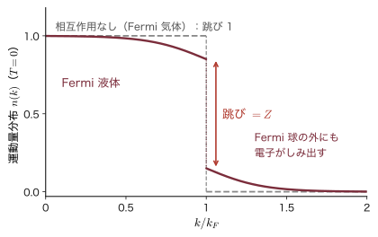
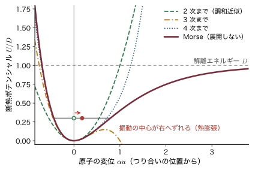
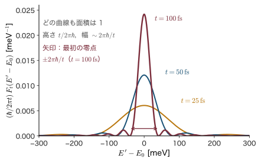
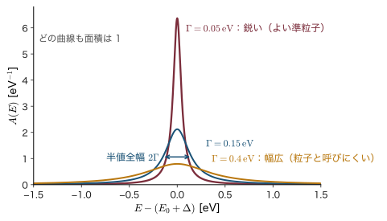
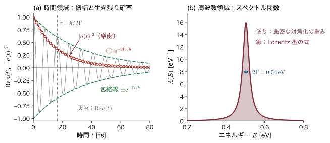
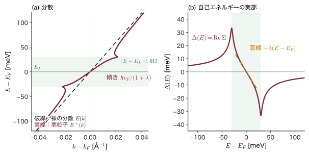
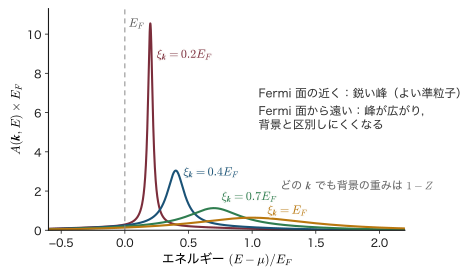
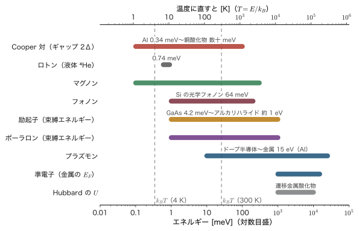
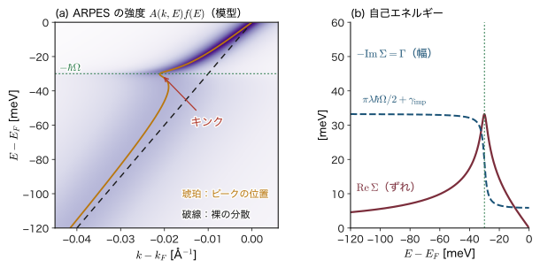

第27章準粒子入門 — 相互作用する多体系を「粒子」で語る
第III部（第12〜20章）では，固体の性質を 2 種類の「互いに独立な粒子」で説明してきた．1 つは周期ポテンシャルの中を他の電子と無関係に走る Bloch 電子（第15〜18章），もう 1 つは調和近似で互いに独立な振動子に分かれた格子振動の量子，フォノン（第13・14章）である．この 2 つだけで，金属の比熱・伝導度・Hall 係数，半導体のキャリア濃度，結晶の比熱の $T^3$ 則まで，驚くほど多くのことが説明できた．しかし，電子どうしの Coulomb 斥力は数 eV もあり，電子の運動エネルギーと同じくらい大きい．格子振動も，振幅が大きくなれば調和振動子からずれる．本当は強く相互作用しているのに，なぜ独立な粒子の描像がうまくいったのか．そして，うまくいかないときには何が起こるのか——これが第V部「固体の物性（発展編）」全体の問いである．
この問いに対する固体物理学の答えが準粒子（quasiparticle）という考え方である．相互作用する多数の粒子の系でも，低いエネルギーの励起は「周りの粒子を引き連れて，少し重くなり，少しだけ短い寿命をもつ粒子」として振る舞う．電子は遮蔽の雲や格子の歪みを「衣」として着て，準電子やポーラロンになる．格子振動はフォノンのまま，互いに衝突して有限の寿命をもつようになる．このように「粒子」の言葉を保ったまま相互作用を取り込めるので，相互作用する系の物性も，準粒子の種類・エネルギー・寿命・統計で語ることができる．Mott（モット）絶縁体，熱膨張，熱伝導，励起子の吸収線，超伝導——第III部では説明できなかった現象が，すべてこの言葉で整理される．
本章は第V部の入口であり，以後の章で使う言葉と地図を用意する．まず，固体のハミルトニアンを Born–Oppenheimer（ボルン–オッペンハイマー）近似と原子変位による展開で整理し，電子間相互作用・電子格子相互作用・フォノン間相互作用の 3 つがどこから出てくるかを見る（第28・29・30章の出発点）．次に，相互作用を「過程」として読むための最小限の道具——生成・消滅演算子とファインマン図の読み方——を導入する．ファインマン図は，本書では計算規則としてではなく，2 次摂動の各項を絵にしたものとしてだけ使う．そのうえで，相互作用が準粒子のエネルギーをずらし（実部），寿命を有限にする（虚部）ことを表す自己エネルギーを，1 つの準位が連続状態と結合した模型で，2 次摂動と Fermi の黄金律から完全に導く．線幅 $2\Gamma$ と寿命 $\tau=\hbar/2\Gamma$ の関係も，因子 2 を取り違えないように定義から導く．
最後に，固体に現れる準粒子（準電子・正孔，フォノン，プラズモン，マグノン，励起子，ポーラロン，ポラリトン，Cooper（クーパー）対，ソリトン，…）を 1 枚の表とエネルギーの物差しにまとめ，それぞれがどの相互作用から生まれ，どんな物性を生むか，どの章で扱うかを示す．そして，角度分解光電子分光（ARPES），中性子散乱，Raman 分光などの実験で，準粒子の分散・線幅・質量がどのように測られるかを見る．本章は数式の負担を軽くし，絵と言葉と表を多くしたが，27.4 節と 27.5 節の導出は以後の全章が使う土台なので，1 行も省かずに書いた．
- 独立粒子の描像（自由電子・Bloch 電子・調和フォノン）で説明できたことと，説明できない現象の一覧，それぞれを第V部のどの章で扱うか
- 準粒子（衣を着た粒子）と集団励起の区別，両者を合わせた素励起という言葉，「準粒子」の広い意味と狭い意味
- Landau の Fermi 液体論の要点：自由電子との 1 対 1 の対応，寿命 $1/\tau\propto(E-E_F)^2+(\pi k_BT)^2$，有効質量 $m^*$ とくりこみ因子 $Z$
- 固体の全ハミルトニアンから，Born–Oppenheimer 近似と原子変位 $u$ による展開で 3 種類の相互作用を取り出す方法と，それぞれの典型的な大きさ
- 生成・消滅演算子：$[a,a^\dagger]=1$ から $a^\dagger\ket{n}=\sqrt{n+1}\ket{n+1}$ を導く．電子の $\{c,c^\dagger\}=1$ と Pauli 原理 $(c^\dagger)^2=0$
- 相互作用の項 $g\,c^\dagger_{\kk+\qq}c_\kk(a_\qq+a^\dagger_{-\qq})$，$Un_\uparrow n_\downarrow$，$\Phi^{(3)}a^\dagger a^\dagger a$ を「過程」として読むこと
- ファインマン図の読み方（線・頂点・外線・内線・保存則）と，図が 2 次摂動の各項の絵であること
- 自己エネルギー $\Sigma=\Delta-i\Gamma$ の完全な導出：2 次摂動のずれ $\Delta$，黄金律の崩壊率と $\Gamma=\pi\abs{V}^2\rho$，Lorentz（ローレンツ）型のスペクトル関数，半値全幅 $2\Gamma$ と寿命 $\tau=\hbar/2\Gamma$
- 固体の準粒子の一覧（統計・エネルギー・起源・物性・章），相互作用から物性への地図，エネルギーの換算（meV，cm$^{-1}$，THz，K）
- ARPES・中性子散乱・Raman・光吸収・トンネル分光・de Haas–van Alphen 効果・比熱で，準粒子の何がわかるか
27.1 独立粒子の描像とその先
27.1.1 第III部の成功 — 3 つの独立粒子模型
第III部で使った模型を振り返ろう．どれも「たくさんの粒子が互いに影響し合わずに，それぞれ勝手に運動する」という独立粒子の描像（independent-particle picture）に立っている．
| 模型 | 残したもの | 捨てたもの | 説明できたこと | 本書の章 |
|---|---|---|---|---|
| 自由電子模型 | 電子の運動エネルギー，Pauli 原理 | イオンの周期ポテンシャル，電子どうしの Coulomb 斥力 | 電子比熱 $C=\gamma T$，Drude の伝導度，Wiedemann–Franz 則，Hall 係数（アルカリ金属） | 第15章（15.5 節ほか） |
| Bloch 電子（バンド理論） | イオンの周期ポテンシャル（電子間の斥力は平均の場として） | 平均からのずれ（電子相関），格子の振動 | 金属・半導体・絶縁体の区別，有効質量，正孔，Fermi 面 | 第16〜18章（16.1 節ほか） |
| 調和フォノン | 原子変位の 2 次までのポテンシャル | 3 次以上（非調和項），電子との結合 | 格子比熱の Debye 則，フォノン分散，中性子散乱 | 第13・14章（13.8 節ほか） |
3 つの模型に共通するのは，ハミルトニアンが1 粒子のハミルトニアンの和に分かれることである．自由電子なら $\sum_i \pp_i^2/2m$，Bloch 電子なら $\sum_i[\pp_i^2/2m+V_{\rm per}(\rr_i)]$，調和フォノンなら独立な振動子の和 $\sum_{\qq\nu}\hbar\omega_{\qq\nu}(n_{\qq\nu}+\tfrac12)$ である（第15章 15.5 節までの記号で $\epsilon_\kk$ と書いた 1 電子のエネルギーを，第V部では $E(\kk)$ と書く）．和に分かれるので，多粒子の状態は「どの 1 粒子状態に何個いるか」を指定するだけで決まり，全エネルギーは 1 粒子のエネルギーの和になる．多体問題が 1 体問題に帰着するので，計算ができた．
27.1.2 無視してきたもの — eV の大きさの Coulomb 斥力
独立粒子の描像で捨てたものは，決して小さくない．まず電子どうしの Coulomb 斥力の大きさを見積もってみよう．
例題27.1 金属の電子間 Coulomb エネルギーと運動エネルギー
Cu の伝導電子の密度は $n=8.47\times10^{28}\,\mathrm{m^{-3}}$ である．(1) 電子 1 個あたりの体積を球とみなしたときの半径 $r_sa_0$（$a_0=0.52918\,\text{Å}$ は Bohr 半径，$r_s$ は無次元の密度の指標）を求めよ．(2) 距離 $r_sa_0$ だけ離れた 2 個の電子の Coulomb エネルギー $e^2/(4\pi\epsilon_0r_sa_0)$ を，Fermi エネルギー $E_F$ と比べよ．(3) Thomas–Fermi（トーマス–フェルミ）の遮蔽長 $1/k_{\rm TF}$ を求め，$r_sa_0$ と比べよ．
解答．(1) 半径 $r_sa_0$ の球の体積が電子 1 個あたりの体積 $1/n$ に等しいとおく：
$$ \frac{4\pi}{3}(r_sa_0)^3=\frac{1}{n} \quad\Longrightarrow\quad r_sa_0=\left(\frac{3}{4\pi n}\right)^{1/3}=\left(\frac{3}{4\pi\times8.47\times10^{28}\,\mathrm{m^{-3}}}\right)^{1/3}=1.413\times10^{-10}\,\mathrm{m} $$よって $r_sa_0=1.413\,\text{Å}$，$r_s=1.413/0.52918=2.67$．
(2) $e^2/(4\pi\epsilon_0a_0)$ は原子のエネルギーの単位で，Hartree（ハートリー）エネルギーと呼ばれる．値は $27.211\,\mathrm{eV}$ だから
$$ \frac{e^2}{4\pi\epsilon_0r_sa_0}=\frac{27.211\,\mathrm{eV}}{r_s}=\frac{27.211}{2.67}\,\mathrm{eV}=10.2\,\mathrm{eV} $$一方，Fermi 波数は $k_F=(3\pi^2n)^{1/3}$ である．$n=3/[4\pi(r_sa_0)^3]$ を代入すると $k_F=(9\pi/4)^{1/3}/(r_sa_0)$ $=1.919/(1.413\,\text{Å})=1.358\,\text{Å}^{-1}$．$\hbar^2/m=7.620\,\mathrm{eV\,\text{Å}^2}$ を使って
$$ E_F=\frac{\hbar^2k_F^2}{2m}=\frac{7.620\,\mathrm{eV\,\text{Å}^2}\times(1.358\,\text{Å}^{-1})^2}{2}=7.03\,\mathrm{eV} $$比は $10.2/7.03=1.45$．Coulomb エネルギーは運動エネルギーと同じ桁で，むしろ大きい．$r_s$ への依存を見ると，Coulomb エネルギーは $1/r_s$，運動エネルギーは $1/r_s^2$ に比例するから，比は $r_s$ に比例して $0.543r_s$ である（密度が低いほど相互作用が相対的に強い）．
(3) Thomas–Fermi の遮蔽波数は，Fermi 準位の状態密度（体積あたり，両スピン）$N_{\rm tot}(E_F)=3n/2E_F$ を使って $k_{\rm TF}^2=e^2N_{\rm tot}(E_F)/\epsilon_0=3ne^2/(2\epsilon_0E_F)$ である（第21章 21.3 節の遮蔽の式）．数値を入れると
$$ k_{\rm TF}^2=\frac{3\times(8.47\times10^{28})\times(1.602\times10^{-19})^2}{2\times(8.854\times10^{-12})\times(7.03\times1.602\times10^{-19})}\,\mathrm{m^{-2}}=3.27\times10^{20}\,\mathrm{m^{-2}} $$より $k_{\rm TF}=1.81\times10^{10}\,\mathrm{m^{-1}}$，$1/k_{\rm TF}=0.553\,\text{Å}$．これは電子間の平均距離の目安 $r_sa_0=1.41\,\text{Å}$ より短い．∎ 電子間の Coulomb エネルギーは eV の大きさで運動エネルギーに匹敵するが，ほかの電子が退いて作る遮蔽によって，1 個の電子の電荷は $0.5\,\text{Å}$ 程度より遠くからはほとんど見えなくなる．これが，相互作用が強いのに独立粒子の描像が金属でうまくいく理由の 1 つである．
Coulomb 斥力がこれほど大きいのに，なぜ第III部では無視できたのか．理由は 3 つある．
なぜ：電子間の斥力が大きいのに独立粒子の描像がうまくいくのか
- 平均の場はバンドに入っている．他のすべての電子が作る平均の静電ポテンシャル（Hartree の場）と交換の効果は，Bloch 電子が感じる周期ポテンシャルに取り込まれている．第一原理計算（密度汎関数理論）のバンドがよく当たるのはこのためで，捨てたのは「平均からのずれ」（電子相関，electron correlation）だけである．
- 遮蔽．例題27.1 で見たように，金属では他の電子が退いて正電荷の穴（遮蔽の雲）を作り，電子の長距離の Coulomb 場を $0.5\,\text{Å}$ 程度で打ち消す．電子は「遮蔽の雲をまとった中性に近い粒子」として動く（第21章 21.3 節）．
- Pauli 原理．Fermi 面の近くの電子が他の電子と衝突しようとしても，行き先の状態がほとんど埋まっているので，散乱がひどく抑えられる．その結果，電子間散乱の頻度は $(k_BT/E_F)^2$ に比例して小さい（第15章 15.9 節．27.2 節で詳しく見る）．
逆に言えば，この 3 つのどれかが効かなくなったとき，独立粒子の描像は破れる．$d$ 軌道や $f$ 軌道のように電子が原子の近くに局在して運動エネルギー（バンド幅）が小さいと，平均の場では表せない相関が主役になる（第28章）．格子が柔らかいと，電子が格子を歪ませて自分の周りに閉じ込められる（第29・31章）．
格子についても同じことが言える．調和近似では，原子変位の 3 次以上の項（非調和項）を捨てた．非調和項は振動のエネルギーに比べて小さいので，フォノンの振動数はよく当たる．しかし，非調和項が無いと説明できない現象がある．その代表が熱膨張である．
例題27.2 調和振動子の結晶は熱膨張しない
1 次元の原子の変位を $x$ とし，ポテンシャルが調和型 $V(x)=\tfrac12Kx^2$ のとき，温度 $T$ での変位の平均 $\langle x\rangle$ が温度によらず 0 であることを，(1) 古典統計，(2) 量子力学の固有状態 $\ket{n}$ の対称性，の 2 通りで示せ．ポテンシャルに $-bx^3$（$b\gt0$ は 3 次の非調和性の係数）を足すと何が変わるかを定性的に述べよ．
解答．(1) 古典統計では，Boltzmann の重み $\ee^{-V(x)/k_BT}$ で平均して
$$ \langle x\rangle=\frac{\displaystyle\int_{-\infty}^{\infty}x\,\ee^{-Kx^2/2k_BT}\,\dd x}{\displaystyle\int_{-\infty}^{\infty}\ee^{-Kx^2/2k_BT}\,\dd x} $$分子の被積分関数は $x$ の奇関数（$x$ を $-x$ にすると符号が変わる）なので，対称な区間で積分すると 0 になる．よって $\langle x\rangle=0$ で，$T$ によらない．
(2) 調和振動子の固有関数 $\psi_n(x)$ は偶関数か奇関数であり（$n$ が偶数なら偶，奇数なら奇），$\abs{\psi_n(x)}^2$ はどちらにしても偶関数である．したがって $\bra{n}x\ket{n}=\int x\abs{\psi_n}^2\dd x=0$．熱平均 $\langle x\rangle=\sum_n p_n\bra{n}x\ket{n}$（$p_n$ は Boltzmann の重み）も 0 になる．
$-bx^3$ を足すと，ポテンシャルは $x\gt0$ 側で緩やかに，$x\lt0$ 側で急になる．原子は緩やかな側（$x\gt0$）に長く留まるので $\langle x\rangle\gt0$ となり，温度とともに増える．∎ 熱膨張は非調和性（フォノン間相互作用の源）があってはじめて起こる．計算は例題27.7 と第30章で行う．第14章 14.6 節では，自由エネルギーの体積依存性（Grüneisen 定数）から同じ結論を得た．
27.1.3 独立粒子の描像で説明できない現象 — 第V部の地図
独立粒子の描像で説明できない（または説明が不十分な）現象を，原因となる相互作用と，第V部で扱う章とともに表27.2 にまとめる．どれも，固体の物性として重要なものばかりである．
| 現象 | 独立粒子の描像では | 原因となる相互作用 | 章 |
|---|---|---|---|
| 熱膨張 | 調和近似では 0（例題27.2） | フォノン間（非調和性） | 第30章（第14章 14.6 節） |
| 有限の格子熱伝導率 | フォノンが衝突しないので無限大 | フォノン間（Umklapp 過程） | 第30章（第14章 14.7 節） |
| Raman 線・赤外吸収の線幅 | フォノンの寿命が無限なので幅 0 | フォノン間，電子格子 | 第30・34章 |
| 金属の電気抵抗の温度依存（高温で $\rho\propto T$） | 完全結晶の Bloch 電子は散乱されない | 電子格子 | 第29章（第21・22章） |
| 電子比熱の $\gamma$ の増大（質量増強） | $\gamma$ はバンドの状態密度で決まる | 電子格子，電子間 | 第29章，第28章 |
| Mott 絶縁体（NiO，CoO など） | $d$ バンドが部分的にしか詰まっていないので金属のはず | 電子間（強い相関） | 第28章 |
| 励起子の吸収線（ギャップより下の鋭い線） | 吸収はギャップ $E_g$ から始まる | 電子–正孔の Coulomb 引力 | 第31章，第33章 |
| ポーラロン（電荷が格子を歪ませて重くなる） | 有効質量はバンドだけで決まる | 電子格子（強結合） | 第31章 |
| 極性結晶の LO–TO 分裂 | 短距離力だけでは LO と TO は縮退しうる | イオンの変位と巨視的電場（光との結合） | 第32章 |
| 構造相転移・強誘電相転移（ソフトモード） | 調和近似のフォノンは温度で変わらない | 電子格子，フォノン間 | 第29・30章（第19章） |
| Peierls（パイエルス）転移・電荷密度波 | 1 次元の金属は金属のまま | 電子格子 | 第35章，第29章 |
| 超伝導 | 電気抵抗は $T\to0$ で残留抵抗に近づくだけ | 電子格子（フォノンが仲立ちする引力） | 第29章，第37章 |
| Anderson 局在，乱れた系の Mott 転移 | （乱れも相関も無い） | 乱れ，電子間 | 第36章 |
表27.2 の右端の章を，相互作用の種類で並べ直したのが図27.2 である．第28章が電子間相互作用，第29章が電子格子相互作用，第30章がフォノン間相互作用の基礎で，第31〜37章がそれらの組み合わせから生まれる物性を扱う．
図27.2 の地図は，27.6 節でもう一度「相互作用 → 準粒子 → 物性」の形に描き直す．その前に，相互作用する系で「粒子」と言えるものは何か（27.2 節），3 つの相互作用はハミルトニアンのどこから出てくるか（27.3 節）を見ておこう．
27.2 準粒子とは何か — 衣を着た粒子と素励起
27.2.1 衣を着た粒子 — 身近な類比とその限界
相互作用する多数の粒子の中を 1 個の粒子が動くと，周りの粒子はその粒子に押されたり引かれたりして形を変える．動く粒子は，その「周りの変形」を引き連れて動くことになる．引き連れた変形の分だけ動かしにくくなる（重くなる）し，変形の一部は後ろに取り残されて広がっていく（エネルギーを失う）．このように周りの変形を「衣」としてまとった粒子を，衣を着た粒子（dressed particle）という．衣を着る前の粒子を裸の粒子（bare particle）という．
古典力学にちょうどよい例がある．水の中で球を動かすと，球は周りの水を押しのけ，水は球の後ろへ回り込む流れを作る．球を加速するには，球自身だけでなく，この流れの運動エネルギーも同時に増やさなければならない．完全流体（粘性が無く，渦の無い流れ）の計算によると，半径 $R$ の球を水中で加速するときの見かけの質量は
$$ m_{\rm eff}=m+\frac12\rho_fV,\qquad V=\frac{4\pi}{3}R^3 $$になる（$\rho_f$ は流体の密度）．増えた分 $\tfrac12\rho_fV$ を付加質量（added mass）という．球が押しのけた流体の質量のちょうど半分である．
例題27.3 泡の付加質量 — 「ほとんど質量の無い粒子」が重くなる
水（$\rho_f=1.00\times10^3\,\mathrm{kg/m^3}$）の中に半径 $1\,\mathrm{mm}$ の空気の泡がある（空気の密度 $1.20\,\mathrm{kg/m^3}$）．(1) 泡の中の空気の質量と付加質量を比べよ．(2) 静止していた泡が浮力 $\rho_fVg$ を受けて動き出すときの加速度を，付加質量を入れる場合と入れない場合で求めよ（重力は空気の分だけで無視できる）．
解答．(1) 泡の体積は $V=\frac{4\pi}{3}(1.0\times10^{-3}\,\mathrm{m})^3=4.19\times10^{-9}\,\mathrm{m^3}$．空気の質量は $1.20\times4.19\times10^{-9}=5.0\times10^{-9}\,\mathrm{kg}$，付加質量は $\tfrac12\times1.00\times10^3\times4.19\times10^{-9}=2.09\times10^{-6}\,\mathrm{kg}$．付加質量のほうが約 $420$ 倍大きい．
(2) 付加質量を入れると，運動方程式は $(m+\tfrac12\rho_fV)a=\rho_fVg$（$m\ll\tfrac12\rho_fV$ なので $m$ は落としてよい）だから
$$ a\simeq\frac{\rho_fVg}{\tfrac12\rho_fV}=2g=19.6\,\mathrm{m/s^2} $$付加質量を入れないと $a=\rho_fVg/m=(1.00\times10^3/1.20)\,g\simeq830g$ という，ありえない値になる．∎ 実際の泡は $2g$ 程度で動き出す（その後は粘性で終端速度に落ち着く）．質量がほとんど無い泡でも，水という「衣」を着ると有限の質量をもつ粒子として振る舞う．固体の中の電子が格子の歪みや遮蔽の雲を着て重くなるのは，これと同じ考え方である．
注意：水中の球の類比の限界
- 量子力学の衣は「仮想的な」励起である．水の流れは目に見える古典的な運動だが，電子の衣は，電子が一瞬だけ作っては消す仮想的なフォノンや電子–正孔対の重ね合わせである（27.4 節の 2 次摂動で見る）．衣の「粒子数」は整数に決まらず，平均値だけが意味をもつ．
- 衣はエネルギーも変える．付加質量は運動エネルギーだけの話だが，準粒子では衣を着ることで静止したときのエネルギーも下がる（ポーラロンの束縛エネルギーなど）．
- 摩擦と寿命は別の仕組み．粘性のある水では球は摩擦でエネルギーを失い続けるが，準粒子は Fermi 面の近くや低温では長く生き残る．寿命は，崩壊できる行き先の数（位相空間）で決まる（27.2.2 項，27.5 節）．
- すべての「粒子」が裸の粒子をもつわけではない．フォノンやプラズモンは，もともと多数の原子・電子の集団運動であり，対応する「裸の 1 粒子」が無い（27.2.3 項）．
27.2.2 Landau の Fermi 液体論
相互作用が強い電子系で，なぜ「粒子」の言葉が使えるのか．この問いに答えたのが Landau（ランダウ）のFermi 液体論（Fermi liquid theory, 1956）である．第15章 15.9 節で要点を述べたので，ここでは「準粒子」の考え方として整理し直す．Landau の考えは 3 つの部分からなる．
(1) 断熱的に相互作用を入れる．相互作用の無い Fermi 気体の基底状態（Fermi 球）と，その上に 1 個の電子を Fermi 面のすぐ外に足した励起状態を考える．ここで相互作用を「ゆっくり」（断熱的に）大きくしていく．途中で相転移（超伝導や磁気秩序）が起こらなければ，状態は連続的に変わり，相互作用する系の基底状態と励起状態になる．Fermi 気体の励起状態の 1 つ 1 つに，相互作用する系の励起状態が 1 対 1 に対応する（図27.4）．この対応する励起を準粒子と呼ぶ．準粒子は元の電子と同じ電荷 $-e$，同じスピン $1/2$，同じ波数 $\kk$ をもち（ラベルは変わらない），Fermi 統計に従う．Fermi 波数 $k_F$ も変わらない（Fermi 球の体積は電子数で決まるから．これを Luttinger（ラッティンジャー）の定理という）．
(2) 準粒子の寿命は Fermi 面で無限に長くなる．相互作用があると，準粒子は他の電子と衝突して別の状態に移れる．つまり準粒子は厳密な固有状態ではなく，有限の寿命 $\tau$ をもつ．ところが Pauli 原理のために，Fermi 面に近い準粒子ほど崩壊の行き先が少なく，寿命が長い．第15章 15.9 節の位相空間の勘定を，ここではもう少し丁寧にやってみよう．
導出：Fermi 面近くの準粒子の崩壊率が $(E-E_F)^2$ に比例すること（$T=0$）
電子 $1,2,3,4$ のエネルギー $E_1,E_2,E_3,E_4$ を Fermi 準位から測った値を，順に $x=E_1-E_F$，$y=E_2-E_F$，$z=E_3-E_F$，$w=E_4-E_F$ と書く．Fermi 面の上 $x\gt0$ にいる電子 1 が，Fermi 球の中の電子 2（エネルギー $y$）と衝突して，電子 3（$z$）と電子 4（$w$）になる過程を考える（図27.5）．$T=0$ では次の 4 つの条件が要る．
- 電子 2 は Fermi 球の中にいる：$y\lt0$．
- 電子 3 の行き先は空いている：$z\gt0$．
- 電子 4 の行き先も空いている：$w\gt0$．
- エネルギー保存：$x+y=z+w$，すなわち $w=x+y-z$．
3 番目と 4 番目を合わせると $x+y-z\gt0$，すなわち $z\lt x+y$．2 番目の $z\gt0$ と合わせると，$z$ が取れる範囲は $0\lt z\lt x+y$ で，これが空でないためには $x+y\gt0$，すなわち $y\gt-x$ が要る．まとめると
$$ -x\lt y\lt0,\qquad 0\lt z\lt x+y $$この $(y,z)$ 平面の領域（図27.5(b) の三角形）の面積は
$$ \int_{-x}^{0}\dd y\int_{0}^{x+y}\dd z=\int_{-x}^{0}(x+y)\,\dd y=\left[xy+\frac{y^2}{2}\right]_{-x}^{0}=0-\left(-x^2+\frac{x^2}{2}\right)=\frac{x^2}{2} $$波数についても勘定しておく．運動量保存 $\kk_1+\kk_2=\kk_3+\kk_4$（逆格子ベクトルの差を除く）のため，電子 2 と電子 3 の波数を選べば電子 4 の波数は決まってしまう．したがって数えるのは電子 2 と電子 3 の選び方だけで，それぞれの波数を「大きさ（エネルギー $y$，$z$ に対応）」と「向き（Fermi 面の上の位置）」に分けると，エネルギーの条件が上の $(y,z)$ の範囲を決め，向きについての積分は Fermi 面の上で行う．$x$ が小さければ，電子はどれも Fermi 面のすぐ近くにいるので，向きについての積分は $x$ によらない定数になる．同じ理由で，Fermi 面の近くでは状態密度と散乱の行列要素もエネルギーによらずほぼ一定とみなせる．したがって崩壊率（単位時間あたりに崩壊する確率）は，この面積に比例する：
∎ 有限温度では Fermi 分布の裾 $k_BT$ の幅の中でも同じ勘定ができ，結果は $(E-E_F)^2$ に $(\pi k_BT)^2$ を足した形になる（係数は相互作用の強さと Fermi 面の形で決まるので，ここでは書かない）：
$$ \frac{1}{\tau}\propto(E-E_F)^2+(\pi k_BT)^2 $$例題27.4 Cu の準粒子の寿命
Fermi 液体の準粒子の線幅（半値半幅，エネルギー）を，係数を 1 程度とおいた目安 $\Gamma\approx[(E-E_F)^2+(\pi k_BT)^2]/E_F$ で見積もる．寿命は $\tau=\hbar/2\Gamma$ とする（この定義は 27.5 節で導く）．Cu（$E_F=7.03\,\mathrm{eV}$，$v_F=1.57\times10^6\,\mathrm{m/s}$）の室温（$k_BT=25.85\,\mathrm{meV}$）で，$E-E_F=k_BT$ の準粒子について，$\Gamma$，$\tau$，平均自由行程 $v_F\tau$ を求め，フォノンによる散乱の時間 $2.5\times10^{-14}\,\mathrm{s}$（第15章）と比べよ．
解答．分子の 2 つの項は
$$ (E-E_F)^2=(0.02585\,\mathrm{eV})^2=6.68\times10^{-4}\,\mathrm{eV^2},\qquad (\pi k_BT)^2=(0.08121\,\mathrm{eV})^2=6.60\times10^{-3}\,\mathrm{eV^2} $$（温度の項のほうが 10 倍大きい．）和を $E_F$ で割って
$$ \Gamma\approx\frac{7.26\times10^{-3}\,\mathrm{eV^2}}{7.03\,\mathrm{eV}}=1.03\times10^{-3}\,\mathrm{eV}=1.0\,\mathrm{meV} $$$\hbar=6.582\times10^{-16}\,\mathrm{eV\,s}$ を使って
$$ \tau=\frac{\hbar}{2\Gamma}=\frac{6.582\times10^{-16}\,\mathrm{eV\,s}}{2\times1.03\times10^{-3}\,\mathrm{eV}}=3.2\times10^{-13}\,\mathrm{s} $$ $$ v_F\tau=1.57\times10^{6}\,\mathrm{m/s}\times3.2\times10^{-13}\,\mathrm{s}=0.5\,\mu\mathrm{m} $$∎ 電子間の衝突による寿命は，フォノンによる散乱の時間 $2.5\times10^{-14}\,\mathrm{s}$ より 1 桁以上長い．また $\Gamma/(E-E_F)=1.0/25.85=0.04$ で，線幅はエネルギーより十分小さい．eV の大きさの Coulomb 斥力があっても，Fermi 面の近くの電子は「ほとんど自由に走る粒子」とみなしてよい．（係数は物質と相互作用の強さで変わるので，これは桁の見積もりである．）
例題27.5 準粒子の描像が使えるエネルギーの範囲
$T=0$ で $\Gamma\approx(E-E_F)^2/E_F$ とする．(1) 線幅が準粒子のエネルギー $E-E_F$ と等しくなるのは，$E-E_F$ がいくらのときか．(2) Cu で $E-E_F=1\,\mathrm{eV}$ の準粒子の $\Gamma/(E-E_F)$ を求めよ．
解答．(1) $x=E-E_F\gt0$ と書くと，条件は $x^2/E_F=x$．$x\neq0$ だから両辺を $x$ で割って $x=E_F$．(2) $\Gamma/x=x/E_F=1/7.03=0.14$（室温の温度の項 $(\pi k_BT)^2/E_F=0.9\,\mathrm{meV}$ は $1\,\mathrm{eV}$ に比べて無視できる）．∎ 準粒子は $\abs{E-E_F}\ll E_F$ でよく定義され，$E_F$ に近づくほど線幅が相対的に小さくなる．逆に $\abs{E-E_F}\sim E_F$ の高いエネルギーの「電子」は，生まれてすぐに崩壊し，粒子と呼びにくい．Fermi 液体論は低エネルギーの理論である．
(3) 有効質量とくりこみ因子．準粒子のエネルギー $E^*(\kk)$ の Fermi 面での傾きから，準粒子の速度 $v_F^*=\hbar^{-1}\partial E^*/\partial k|_{k_F}$ と有効質量 $m^*=\hbar k_F/v_F^*$ が決まる．Fermi 波数 $k_F$ は変わらないので，比熱係数は状態密度を通して $m^*$ に比例する（$\gamma/\gamma_{\rm free}=m^*/m$，第15章 15.5 節）．液体 $^3$He は Fermi 液体の代表例で，$m^*/m$ は圧力によって約 3 から約 6 になる．固体では，バンド構造による質量（バンド質量）に，電子格子相互作用や電子間相互作用による増強が掛かる（27.5 節，第29章）．
もう 1 つの量がくりこみ因子（renormalization factor，準粒子の重み）$Z$（$0\lt Z\le1$）である．Fermi 液体に裸の電子を 1 個入れると，その状態は「準粒子 1 個」と「準粒子＋電子–正孔対などの多数の励起」の重ね合わせになる．$Z$ は，そのうち準粒子 1 個の成分の割合である．衣を着ると，裸の電子の成分は $Z$ に減る．$Z$ は運動量分布 $n(\kk)$（波数 $\kk$ の裸の電子が何個いるか）に直接現れ，相互作用の無い系で 1 だった Fermi 面での跳びが，Fermi 液体では $Z$ になる（図27.6）．

補足：$Z$ と $m^*$ をもっと知りたい読者へ
本書では $Z$ と $m^*$ を「意味」だけで使う．Green 関数と自己エネルギーで $Z=[1-\partial\,\mathrm{Re}\,\Sigma/\partial E]^{-1}$ と定義する方法，準粒子方程式と $Z$ の関係は，姉妹編『線形応答理論』の付録C C.1 節（Green 関数は何を記述するのか — くりこみと寿命）とC.8 節（GW 近似と準粒子方程式），Fermi 液体の集団モード（ゼロ音波）は同書の第11章 11.7 節にある．
27.2.3 準粒子と集団励起 — 素励起という言葉
固体の低エネルギーの励起には，性格の違う 2 種類がある．
定義：準粒子（狭い意味），集団励起，素励起
- 準粒子（狭い意味）：裸の粒子（ふつうは Fermi 粒子である電子）が，相互作用によって衣を着たもの．裸の粒子と 1 対 1 に対応し，同じ電荷・スピン・統計をもつ．例：準電子と準正孔（Fermi 液体），ポーラロン（格子の歪みを着た電子），Bogoliubov（ボゴリューボフ）準粒子（超伝導体の中の電子と正孔の重ね合わせ）．
- 集団励起（collective excitation）：多数の粒子が足並みをそろえて動く運動を量子化したもの．対応する裸の 1 粒子は無く，ふつう Bose 統計に従う．例：フォノン（原子の集団振動），プラズモン（電子の密度の集団振動），マグノン（スピンの向きの集団的な歳差運動）．
- 素励起（elementary excitation）：上の 2 つを合わせた呼び方．系の低いエネルギーの励起状態が，互いにほぼ独立な「励起の量子」をいくつか足したものとして書けるとき，その 1 つ 1 つを素励起という．
第V部での使い方：固体物理学では，集団励起や複合した励起（励起子，ポラリトン，Cooper 対）も含めて，素励起をすべて「準粒子」と呼ぶことが多い（広い意味）．第V部でも，特に断らないかぎり「準粒子」を広い意味で使う．衣を着た Fermi 粒子だけを指すときは「狭い意味の準粒子」と明記する．
この区別は，「その準粒子を分解すると何になるか」を考えるとはっきりする．準電子は衣を脱がせれば裸の電子 1 個に戻る．フォノンは，分解すると多数の原子の小さな変位になってしまい，どの原子が「フォノンの本体」というわけではない．励起子は，分解すれば電子 1 個と正孔 1 個になる．図27.7 に，第V部に登場する準粒子をこの観点で分類した．統計（Fermi か Bose か）も同時に書いてある．Fermi 粒子 2 個（電子と正孔，電子 2 個）が束縛した複合粒子は，全体として Bose 粒子のように振る舞う．
27.2.4 準粒子であるための条件
相互作用する系の励起は，厳密には有限の寿命をもつ．それでも「粒子」と呼べるのは，寿命が十分長いとき，すなわち崩壊するまでに何回も振動できるときである．
定義：よく定義された準粒子
エネルギー $E$（励起エネルギー，Fermi 粒子なら $E_F$ から測る）の励起の線幅（半値半幅）を $\Gamma$ とするとき，
を満たす励起を，よく定義された準粒子（well-defined quasiparticle）という．寿命 $\tau=\hbar/2\Gamma$（27.5 節）を使うと，条件は $\abs{E}\tau/\hbar\gg1/2$，すなわち位相 $Et/\hbar$ が寿命のあいだに何ラジアンも回ることと同じである．
例題27.4・27.5 で見たように，Fermi 液体の準粒子は $E\to E_F$ で $\Gamma/\abs{E-E_F}\propto\abs{E-E_F}\to0$ となり，条件 \eqref{eq:27-qp-condition} をよく満たす．フォノンは，室温の Si の光学フォノンで $\Gamma/E\sim3\times10^{-3}$ 程度（例題27.17）なので，非常によい準粒子である．一方，強い相関のある系や乱れた系では，この条件が満たされない励起も多い．そのとき「粒子」の言葉は使えず，スペクトル関数（27.5 節）全体を見なければならない．
27.3 3 種類の相互作用 — 電子間・電子格子・フォノン間
準粒子の「衣」は相互作用から生まれる．では，固体の中にはどんな相互作用があるのか．固体を構成するのは電子と原子核（以下，内殻電子を含めてイオンと呼ぶ）だけで，働く力は Coulomb 力だけである．出発点のハミルトニアンは驚くほど単純である．それを整理すると，3 種類の相互作用が自然に現れる．
27.3.1 固体の全ハミルトニアン
図27.8 に，登場するものと働く力を描いた．電子とイオンは Coulomb 力だけで引き合い・反発し合い，軽い電子は速く，重いイオンはゆっくり動く．
電子（質量 $m$，電荷 $-e$，位置 $\rr_i$）が $N_e$ 個，イオン（質量 $M_l$，電荷 $Z_le$，位置 $\RR_l$）が $N$ 個ある．全ハミルトニアンは，次の 5 つの項の和である（図27.8 の線と矢印に対応する）：
$T_e$ と $T_I$ は電子とイオンの運動エネルギー，$V_{ee}$ は電子どうしの Coulomb 斥力，$V_{eI}$ は電子とイオンの Coulomb 引力，$V_{II}$ はイオンどうしの Coulomb 斥力である（因子 $\tfrac12$ は，同じ組を 2 回数えないため）．固体物理学のすべては，原理的にはこの式に含まれている．
27.3.2 Born–Oppenheimer（断熱）近似
式 \eqref{eq:27-Htot} をそのまま解くことはできない．最初の整理は，電子とイオンの質量の大きな違いを使う．電子はイオンよりずっと速く動くので，イオンが少し動くあいだに，電子はその瞬間のイオンの配置に合った状態に落ち着いてしまう．これをBorn–Oppenheimer 近似（Born–Oppenheimer approximation）または断熱近似（adiabatic approximation）という．なお，27.2.2 項の Landau の議論に出てきた「断熱的に相互作用を入れる」は，相互作用の強さを時間をかけてゆっくり大きくするという意味で，ここでいう断熱近似（速い電子が遅いイオンの動きに瞬時についていく）とは別のことを指す．どちらも「ゆっくり変わるものに系がついていく」という共通の考え方から，同じ言葉が使われている．
導出：断熱ポテンシャル
ステップ 1：イオンを止めて電子の問題を解く．イオンの位置をまとめて $\bm R=\{\RR_l\}$ と書き，それを固定したパラメータとみなす．$T_I$ を除いた残りを電子のハミルトニアンとする：
$$ \Ham_e(\bm R)=T_e+V_{ee}+V_{eI}(\bm R) $$この固有値問題 $\Ham_e(\bm R)\phi_{\bm R}(\{\rr_i\})=E_{\rm el}(\bm R)\phi_{\bm R}(\{\rr_i\})$ を解き，電子の基底状態のエネルギー $E_{\rm el}(\bm R)$ を，イオンの配置の関数として求める．
ステップ 2：全体の波動関数を積の形におく．$\Psi(\{\rr_i\},\bm R)=\chi(\bm R)\phi_{\bm R}(\{\rr_i\})$ とおいて $\Ham\Psi=E\Psi$ に代入する．$T_I=\sum_l\bm P_l^2/2M_l$ は $\bm R$ についての微分なので，$\chi$ と $\phi_{\bm R}$ の両方に掛かる．$\phi_{\bm R}$ が $\bm R$ に依存する部分（$\partial\phi_{\bm R}/\partial\RR_l$）に掛かる項は，$m/M$ の小さな因子をもつので捨てる．すると
$$ \Ham\Psi\simeq\phi_{\bm R}\,\bigl[T_I+E_{\rm el}(\bm R)+V_{II}(\bm R)\bigr]\chi(\bm R) $$ステップ 3：イオンの運動方程式．$\phi_{\bm R}$ で割れば，イオンは
という Schrödinger 方程式に従う．$U(\bm R)$ を断熱ポテンシャル（adiabatic potential，Born–Oppenheimer ポテンシャル面）という．∎ イオンは「電子がつくるポテンシャル $E_{\rm el}$」と「イオンどうしの斥力 $V_{II}$」の和の上を動く．第一原理計算で原子に働く力を求め，構造を最適化し，フォノンを計算するのは，この $U(\bm R)$ を計算していることにほかならない．
ステップ 2 で捨てた項（電子の状態がイオンの動きに追いつけないことによる項）を非断熱項という．フォノンが電子を実際に別の状態へ散乱する過程（電気抵抗，フォノンの放出・吸収）や，フォノンが仲立ちする電子間の引力（超伝導）は，イオンが動いていることで電子が別の状態へ移り変わる過程である．
補足：電子格子相互作用の 2 つの言い方
「イオンが動くことで電子が別の状態へ移る」ことの書き方には，次の 2 通りがある．
- 断熱状態の言い方．電子は，イオンのその瞬間の配置 $\bm R$ に合わせた状態 $\phi_{\bm R}$ に居続ける（断熱近似）．このとき電子が別の状態へ移るのは，ステップ 2 で捨てた非断熱項による．
- 変位で展開する言い方．電子の状態を，イオンが平衡位置 $\bm R^0$ に止まった完全結晶の状態（Bloch 状態）に固定しておき，イオンの変位 $\uu$ によるポテンシャルの変化を摂動とみなす．このときは，電子格子相互作用は $V_{eI}$ を $\uu$ で展開した 1 次の項として現れる（次の 27.3.3 項）．
2 つは同じ物理を別の基底で書いたもので，固体物理学では 2 番目が標準的である．本書も 27.3.3 項以降，第29章を含めて 2 番目の言い方で書く．なお，2 番目の言い方で調和フォノンを求めるときに使う断熱ポテンシャル $U$ の 2 次の項には，電子がイオンの動きについていく効果（電子による遮蔽）がすでに入っている．同じ効果を電子格子相互作用の側でもう一度数えないように注意が要る．
例題27.6 Born–Oppenheimer のパラメータとエネルギーの階層
原子間距離を $a$，電子の典型的なエネルギーを $E_{\rm el}\sim\hbar^2/(ma^2)$（結合のエネルギーの目安）とし，原子間の力定数を $K\sim E_{\rm el}/a^2$ と見積もる．(1) フォノンのエネルギー $\hbar\omega=\hbar\sqrt{K/M}$ が $\kappa^2E_{\rm el}$ の程度であることを示せ．ここで $\kappa\equiv(m/M)^{1/4}$．(2) 零点振動の振幅 $u_0\sim\sqrt{\hbar/M\omega}$ が $\kappa a$ の程度であることを示し，非調和項によるエネルギーの補正が $\kappa^4E_{\rm el}$ の程度になることを説明せよ．(3) Si（原子量 $28.09$）で $\kappa^2$，$\kappa^4$ を求め，$E_{\rm el}=10\,\mathrm{eV}$ として各エネルギーを見積もれ．
解答．(1) $\hbar\omega=\hbar\sqrt{K/M}=\hbar\sqrt{E_{\rm el}/(Ma^2)}$．根号の中に $m/m$ を掛けて並べ替えると
$$ \hbar\omega=\sqrt{\frac{\hbar^2}{ma^2}\cdot E_{\rm el}\cdot\frac{m}{M}}\sim\sqrt{E_{\rm el}\cdot E_{\rm el}\cdot\frac mM}=E_{\rm el}\left(\frac mM\right)^{1/2}=\kappa^2E_{\rm el} $$(2) $u_0^2\sim\hbar/(M\omega)=\hbar^2/(M\hbar\omega)\sim\hbar^2/(M\kappa^2E_{\rm el})$．$E_{\rm el}\sim\hbar^2/(ma^2)$ を入れると $u_0^2\sim ma^2/(M\kappa^2)=\kappa^4a^2/\kappa^2=\kappa^2a^2$，すなわち $u_0\sim\kappa a$．ポテンシャルを $u/a$ で展開すると，3 次の項と 2 次の項の比は $u/a\sim\kappa$ の程度である．3 次の項の 2 次摂動（27.4 節）によるエネルギーの補正は，（3 次の項）$^2$/（励起エネルギー $\hbar\omega$）$\sim(\kappa\cdot\hbar\omega)^2/\hbar\omega=\kappa^2\hbar\omega=\kappa^4E_{\rm el}$ の程度になる．
(3) Si の質量は $M=28.09\times1.6605\times10^{-27}\,\mathrm{kg}$ $=4.664\times10^{-26}\,\mathrm{kg}$ だから
$$ \frac mM=\frac{9.109\times10^{-31}}{4.664\times10^{-26}}=1.95\times10^{-5},\qquad \kappa^2=\left(\frac mM\right)^{1/2}=4.42\times10^{-3},\qquad\kappa^4=1.95\times10^{-5} $$$E_{\rm el}=10\,\mathrm{eV}$ なら，フォノンは $\kappa^2E_{\rm el}=44\,\mathrm{meV}$，非調和性による補正は $\kappa^4E_{\rm el}=0.2\,\mathrm{meV}$．∎ 実際の Si の光学フォノンは $64\,\mathrm{meV}$（$520\,\mathrm{cm^{-1}}$），室温の線幅（半値半幅）は $0.2\,\mathrm{meV}$ 程度で，粗い見積もりとしては桁が合う．電子（eV）≫ フォノン（数十 meV）≫ 非調和性（$0.1$〜数 meV）という階層は，$m/M$ が小さいことから来ている．電子格子相互作用がもたらすエネルギーのずれは，後で見るように $\lambda\hbar\omega$（$\lambda$ は 1 程度までの無次元の結合定数）の程度なので，フォノンと同じ数十 meV の程度になる．
27.3.3 原子の変位で展開する — 3 種類の相互作用の出どころ
次に，イオンが平衡位置 $\RR_l^0$ から小さく変位している（変位 $\uu_l$）として，$\RR_l=\RR_l^0+\uu_l$ を代入し，$\uu_l$ のべきで展開する．展開するものは 2 つある：電子が感じるポテンシャル $V_{eI}$ と，イオンが感じる断熱ポテンシャル $U$ である．
導出：変位 $u$ による展開と各次数の意味
(i) 電子のハミルトニアン．$V_{eI}=\sum_{i,l}v(\rr_i-\RR_l)$（$v$ は 1 個のイオンが電子に及ぼすポテンシャル）を $\uu_l$ で Taylor 展開する．$v(\rr-\RR_l^0-\uu_l)$ $=v(\rr-\RR_l^0)-\uu_l\cdot\nabla v(\rr-\RR_l^0)+O(u^2)$ だから
$$ \Ham_e=\underbrace{T_e+V_{ee}+\sum_{i,l}v(\rr_i-\RR^0_l)}_{\text{0 次：完全結晶の電子}}\; \underbrace{-\sum_{i,l}\uu_l\cdot\nabla v(\rr_i-\RR^0_l)}_{\text{1 次：電子格子相互作用}}\;+\;O(u^2) $$0 次の項は，イオンが平衡位置に止まった完全結晶の中の電子の問題である．その中の $V_{ee}$ を平均の場で近似したものがバンド構造（第16〜18章）で，平均からのずれが電子間相互作用（電子相関）として残る．1 次の項は，電子の座標 $\rr_i$ とイオンの変位 $\uu_l$ の両方を含む．すなわち電子と格子振動を結びつける項で，これが電子格子相互作用（electron–phonon interaction）である．
(ii) 断熱ポテンシャル．$U(\bm R^0+\uu)$ を同じように展開する（$\alpha,\beta,\gamma$ は $x,y,z$ の成分）：
$$ \begin{aligned} U={}&U_0+\sum_{l\alpha}\frac{\partial U}{\partial u_{l\alpha}}u_{l\alpha} +\frac1{2!}\sum\Phi^{(2)}_{l\alpha,l'\beta}u_{l\alpha}u_{l'\beta} \\ &+\frac1{3!}\sum\Phi^{(3)}_{l\alpha,l'\beta,l''\gamma}u_{l\alpha}u_{l'\beta}u_{l''\gamma} +\frac1{4!}\sum\Phi^{(4)}uuuu+\cdots \end{aligned} $$ここで $\Phi^{(n)}$ は $U$ の $n$ 階の偏微分を平衡位置で評価したもの（$n$ 次の力定数）である．平衡位置では力が 0 なので，1 次の項は消える．2 次の項はバネのエネルギーで，これだけを残すのが調和近似である．2 次の項から調和フォノン（第13章）が生まれる．3 次以上の項は，フォノンどうしを結びつける（3 次の項はフォノン 3 個の生成・消滅を含む．27.4 節）．これがフォノン間相互作用（phonon–phonon interaction，非調和相互作用）である．∎
| どこを展開するか | 次数 | 生まれるもの | 典型的な大きさ | 章 |
|---|---|---|---|---|
| 電子のハミルトニアン | 0 次（完全結晶） | バンド構造＋電子間相互作用（平均からのずれ） | バンド幅・$U$：eV | 第16〜18章，第28章 |
| 電子のハミルトニアン | 1 次（$u$ と電子の座標の積） | 電子格子相互作用 | $\lambda\hbar\omega$：数十 meV | 第29章，第31章 |
| 断熱ポテンシャル | 1 次 | （平衡位置では 0） | — | — |
| 断熱ポテンシャル | 2 次 | 調和フォノン | $\hbar\omega$：数〜百数十 meV | 第13・14章 |
| 断熱ポテンシャル | 3 次・4 次 | フォノン間相互作用（非調和性） | 振動数のずれ・線幅：0.1〜数 meV | 第30章 |
図27.9 は，1 本の結合を Morse（モース）ポテンシャルで表し，展開を何次まで残すかでポテンシャルの形がどう変わるかを示したものである．

例題27.7 3 次の非調和項による熱膨張（古典統計）
1 本の結合のポテンシャルを $U(u)=\tfrac12Ku^2-bu^3$ とする（$b\gt0$ は 3 次の非調和性の係数．電子格子相互作用の $g$ とは別）．(1) $b$ について 1 次までで，古典統計の平均変位が $\langle u\rangle=3bk_BT/K^2$ になることを示せ．(2) Morse ポテンシャル $U=D(1-\ee^{-\alpha u})^2$ の展開から $K$ と $b$ を読み取り，$\langle u\rangle$ を $D$，$\alpha$ で書け．
解答．(1) $\beta=1/k_BT$ とおく．$\ee^{-\beta U}=\ee^{-\beta Ku^2/2}\ee^{\beta bu^3}$ の第 2 因子を $b$ の 1 次まで展開して $\ee^{\beta bu^3}\simeq1+\beta bu^3$．平均は
$$ \langle u\rangle=\frac{\int u(1+\beta bu^3)\ee^{-\beta Ku^2/2}\dd u}{\int(1+\beta bu^3)\ee^{-\beta Ku^2/2}\dd u} $$分母の $\beta bu^3$ の項と，分子の $u$ の項は奇関数の積分で 0 になる．残るのは
$$ \langle u\rangle=\beta b\frac{\int u^4\ee^{-\beta Ku^2/2}\dd u}{\int\ee^{-\beta Ku^2/2}\dd u}=\beta b\langle u^4\rangle_0 $$ここで $\langle\cdots\rangle_0$ は分散 $\sigma^2=1/(\beta K)$ の Gauss 分布での平均で，Gauss 分布の 4 次のモーメントは $\langle u^4\rangle_0=3\sigma^4$（付録A A.4 節）．よって
$$ \langle u\rangle=\beta b\cdot\frac{3}{\beta^2K^2}=\frac{3b}{\beta K^2}=\frac{3bk_BT}{K^2} $$(2) 展開 $U=D[(\alpha u)^2-(\alpha u)^3+\cdots]$ と $\tfrac12Ku^2-bu^3$ を比べて $K=2D\alpha^2$，$b=D\alpha^3$．代入して
$$ \langle u\rangle=\frac{3D\alpha^3k_BT}{(2D\alpha^2)^2}=\frac{3k_BT}{4D\alpha} $$∎ 平均変位は温度に比例して増える（古典統計の範囲で，線膨張率が一定）．3 次の項 $b$ が無ければ 0 である．低温では量子効果で熱膨張率は 0 に向かう（第14章 14.6 節，第30章）．なお，結晶の熱膨張は 1 本の結合だけでは決まらず，横方向の振動が結合を縮める効果なども効く（負の熱膨張．第30章）．
27.3.4 相互作用の三角形
ここまでの整理を 1 枚の図にまとめよう．固体の低エネルギーの主役は，電子（とその抜け穴の正孔），フォノン，そして外から入ってくる光子の 3 つである．3 つを三角形の頂点に置くと，頂点どうしを結ぶ辺と，頂点から自分自身に戻る輪が，それぞれ 1 つの相互作用を表す（図27.10）．
三角形のどの辺・輪も，準粒子の衣を作り，寿命を有限にする．たとえば電子は，電子間相互作用で遮蔽の雲を着て（準電子），電子格子相互作用で格子の歪みを着る（ポーラロン）．フォノンは，フォノン間相互作用で他のフォノンに崩壊し（有限の寿命と熱伝導率），電子格子相互作用で電子–正孔対に崩壊する（金属のフォノンの線幅，Kohn（コーン）異常）．光子は，物質の中で励起子やフォノンと混ざってポラリトンになる．こうした「衣」と「崩壊」を，次の 27.4 節で導入する言葉で，過程として読めるようにしよう．
記号の約束：本章で使う記号
- 1 電子のエネルギーは $E(\kk)$，化学ポテンシャルから測ったものは $\xi_\kk=E(\kk)-\mu$．準粒子のエネルギーの線幅（半値半幅，エネルギーの単位）は $\Gamma$，寿命は $\tau=\hbar/2\Gamma$（27.5 節で導く）．第30章は角振動数の半値半幅を $\Gamma$（本章の $\Gamma/\hbar$．表27.4 の $\gamma$），第34章は角振動数の半値全幅を $\gamma$（本章の $2\Gamma/\hbar$．表27.4 の $\gamma$ の 2 倍）と書く．
- フォノンの波数 $\qq$，分枝 $\nu$，角振動数 $\omega_\qq$（$\omega_{\qq\nu}$），生成・消滅演算子 $a^\dagger_\qq$，$a_\qq$．電子の生成・消滅演算子 $c^\dagger_{\kk\sigma}$，$c_{\kk\sigma}$．
- 電子格子相互作用の行列要素 $g$（エネルギーの次元），無次元の結合定数 $\lambda$．Hubbard の $U$．$n$ 次の力定数 $\Phi^{(n)}$．
- 文字 $t$ は本章では時間を表す（第28章の飛び移り積分 $t$ とは別）．
- 文字 $\Delta$：27.5 節では自己エネルギーの実部（エネルギーのずれ）を表す．表27.5，図27.24，例題27.18 とシミュレーター（27.5.3 項）に出てくる $\Delta$ は超伝導ギャップ（$2\Delta$ が対を壊すのに要るエネルギー）で，別の量である．
- 文字 $V$：27.2.1 項では球の体積，27.4.5 項では結晶の体積 $V=N\Omega$，27.5 節では離散準位と連続状態のあいだの結合の大きさ $V$，$V_n$（エネルギーの次元）．
- 文字 $g$：電子格子相互作用の行列要素．例題27.3 の $g$ だけは重力加速度．熱膨張の例題27.2・27.7 では 3 次の非調和性の係数を $b$ と書く．
- 文字 $N$，$n$：$N$ は単位胞（原子）の数，$N_e$ は電子の数．27.4.1 項の $N=a^\dagger a$ は数演算子，$N_\qq$ はモード $\qq$ のフォノンの数．$n$ は電子の密度（27.1 節），調和振動子の準位の番号（フォノンの数），電子の数演算子 $n_{i\sigma}$，屈折率（例題27.22）に使う．Bose 分布は $n(\omega)$ と引数を付けて書く．
- 文字 $\Omega$，$\kappa$，$\nu$：$\Omega$ は単位胞の体積（27.4.5 項）と，27.7 節の Einstein フォノンの角振動数（エネルギー $\hbar\Omega$）．$\kappa=(m/M)^{1/4}$ は例題27.6 の展開のパラメータ．$\nu$ はフォノンの分枝の添字で，例題27.17 の $\nu=c\tilde\nu$ と光子のエネルギー $h\nu$ では振動数を表す．
27.4 準粒子を記述する言葉 — 生成・消滅演算子とファインマン図の読み方
相互作用する系では，粒子が生まれたり消えたりする．電子がフォノンを放出すればフォノンが 1 個増え，フォノンが 2 つに分かれれば 1 個減って 2 個増える．こうした過程を書くには，「粒子を 1 個作る」「粒子を 1 個消す」という操作を表す演算子があると便利である．それが生成演算子（creation operator）と消滅演算子（annihilation operator）である．本節では，第二量子化の一般論には立ち入らず，1 次元調和振動子と 1 つの準位という最も簡単な場合から，必要な性質をすべて導く．そのうえで，相互作用の項を「過程」として読み，それを絵にしたファインマン図の読み方を学ぶ．
27.4.1 調和振動子の昇降演算子 — フォノンを 1 個作る・消す
1 つの格子振動のモードは，1 次元の調和振動子と同じである（第13章 13.8 節）．質量 $M$，角振動数 $\omega$，座標 $Q$，運動量 $P$ の調和振動子のハミルトニアンは
$$ \Ham=\frac{P^2}{2M}+\frac12M\omega^2Q^2,\qquad[Q,P]=QP-PQ=i\hbar $$である．第13章では固有値 $(n+\tfrac12)\hbar\omega$ を「量子力学の初歩で学んだとおり」として使った．ここでは，それを演算子だけで導き，同時に「フォノンを作る・消す」演算子を手に入れる．
導出に入る前に，見通しを述べておく．目標は図27.11 の「はしご」である．等間隔 $\hbar\omega$ に並んだ準位を，1 段ずつ上る演算子と 1 段ずつ下りる演算子が見つかれば，準位の構造はそれだけで決まる．手がかりは，ハミルトニアン $\Ham=\frac{1}{2M}\bigl(P^2+M^2\omega^2Q^2\bigr)$ が「2 乗の和」の形をしていることである．ふつうの数なら $x^2+y^2=(x-iy)(x+iy)$ と 1 次式の積に因数分解できる．同じことを演算子で試すと
$$ (M\omega Q-iP)(M\omega Q+iP)=M^2\omega^2Q^2+P^2+iM\omega(QP-PQ)=M^2\omega^2Q^2+P^2-M\hbar\omega $$となる（$QP-PQ=i\hbar$ を使った）．$Q$ と $P$ が交換しないので，数の場合には無い余り $-M\hbar\omega$ が出る．したがって $\Ham=\frac{1}{2M}(M\omega Q-iP)(M\omega Q+iP)+\tfrac12\hbar\omega$ と，「1 次式の積＋定数」の形に書ける．この 1 次式の因子に定数を掛けたものが，次の導出 1 で定義する $a$ と $a^\dagger$ であり，余りの $\tfrac12\hbar\omega$ が零点エネルギーになる（導出 2）．定数 $\sqrt{M\omega/2\hbar}$ は，交換子 $[a,a^\dagger]$ がちょうど 1 になるように選んだものである．
導出 1：昇降演算子の定義と交換関係
次の 2 つの演算子を定義する：
$$ a=\sqrt{\frac{M\omega}{2\hbar}}\left(Q+\frac{i}{M\omega}P\right),\qquad a^\dagger=\sqrt{\frac{M\omega}{2\hbar}}\left(Q-\frac{i}{M\omega}P\right) $$（$Q$ と $P$ はエルミートなので，$a^\dagger$ は $a$ のエルミート共役である．）2 式の和と差をとって $Q$，$P$ について解くと
（確かめ：$a+a^\dagger=2\sqrt{M\omega/2\hbar}\,Q$ だから $Q=\sqrt{\hbar/2M\omega}\,(a+a^\dagger)$．$a-a^\dagger=2\sqrt{M\omega/2\hbar}\,(i/M\omega)P$ だから $P=-i\sqrt{M\hbar\omega/2}\,(a-a^\dagger)$ $=i\sqrt{M\hbar\omega/2}\,(a^\dagger-a)$．）
交換子を計算する．定数 $\frac{M\omega}{2\hbar}$ をくくり出し，交換子が双線形であること（$[A+B,C]=[A,C]+[B,C]$）を使って展開すると
$$ \begin{aligned} [a,a^\dagger]&=\frac{M\omega}{2\hbar}\left[Q+\frac{i}{M\omega}P,\;Q-\frac{i}{M\omega}P\right]\\ &=\frac{M\omega}{2\hbar}\left([Q,Q]-\frac{i}{M\omega}[Q,P]+\frac{i}{M\omega}[P,Q]+\frac{1}{M^2\omega^2}[P,P]\right) \end{aligned} $$$[Q,Q]=[P,P]=0$，$[Q,P]=i\hbar$，$[P,Q]=-i\hbar$ を代入すると，括弧の中は $-\frac{i}{M\omega}(i\hbar)+\frac{i}{M\omega}(-i\hbar)=\frac{\hbar}{M\omega}+\frac{\hbar}{M\omega}=\frac{2\hbar}{M\omega}$．よって
導出 2：ハミルトニアンは $\hbar\omega(a^\dagger a+\tfrac12)$
$a^\dagger a$ を展開する．
$$ a^\dagger a=\frac{M\omega}{2\hbar}\left(Q-\frac{i}{M\omega}P\right)\left(Q+\frac{i}{M\omega}P\right) =\frac{M\omega}{2\hbar}\left(Q^2+\frac{P^2}{M^2\omega^2}+\frac{i}{M\omega}(QP-PQ)\right) $$$QP-PQ=i\hbar$ だから最後の項は $\frac{i}{M\omega}\cdot i\hbar=-\frac{\hbar}{M\omega}$．したがって
$$ a^\dagger a=\frac{M\omega}{2\hbar}Q^2+\frac{P^2}{2\hbar M\omega}-\frac12 =\frac{1}{\hbar\omega}\left(\frac12M\omega^2Q^2+\frac{P^2}{2M}\right)-\frac12 =\frac{\Ham}{\hbar\omega}-\frac12 $$移項して
導出 3：$a^\dagger$ は 1 段上げ，$a$ は 1 段下げる
$N\equiv a^\dagger a$ を数演算子（number operator）と呼ぶ．交換子の公式 $[AB,C]=A[B,C]+[A,C]B$ と式 \eqref{eq:27-boson-comm} から
$$ [N,a^\dagger]=a^\dagger[a,a^\dagger]+[a^\dagger,a^\dagger]a=a^\dagger,\qquad [N,a]=a^\dagger[a,a]+[a^\dagger,a]a=-a $$$N$ の固有状態を $N\ket{n}=n\ket{n}$（$\bra{n}n\rangle=1$）とする．$a^\dagger\ket{n}$ に $N$ を作用させると，$Na^\dagger=a^\dagger N+[N,a^\dagger]=a^\dagger N+a^\dagger$ だから
$$ N\bigl(a^\dagger\ket{n}\bigr)=a^\dagger N\ket{n}+a^\dagger\ket{n}=(n+1)\bigl(a^\dagger\ket{n}\bigr) $$つまり $a^\dagger\ket{n}$ は固有値 $n+1$ の固有状態で，$a^\dagger\ket{n}=C\ket{n+1}$ と書ける．係数 $C$ はノルムから決まる：
$$ \abs{C}^2=\bigl\|a^\dagger\ket{n}\bigr\|^2=\bra{n}aa^\dagger\ket{n}=\bra{n}(a^\dagger a+1)\ket{n}=n+1 $$（$aa^\dagger=a^\dagger a+[a,a^\dagger]=N+1$ を使った．）位相を実に選んで $C=\sqrt{n+1}$．同じように $Na=aN-a$ から $N(a\ket{n})=(n-1)(a\ket{n})$，ノルムは $\|a\ket{n}\|^2=\bra{n}a^\dagger a\ket{n}=n$ だから
$n$ は 0 以上の整数である．ノルムは負になれないので $n=\|a\ket{n}\|^2\ge0$．もし $n$ が整数でなければ，$a$ を繰り返し作用させると $n-1,n-2,\ldots$ と下がり続け，いつか負の固有値に達して矛盾する．$n$ が整数なら，$n=0$ に達したところで $a\ket{0}=\sqrt0\,\ket{-1}=0$ となって止まる．したがって $n=0,1,2,\ldots$ で，式 \eqref{eq:27-Hosc} からエネルギーは $(n+\tfrac12)\hbar\omega$ である．∎
式 \eqref{eq:27-ladder} の意味をフォノンの言葉で言い直そう．$\ket{n}$ は「このモードにフォノンが $n$ 個いる状態」，$N=a^\dagger a$ は「フォノンの個数を数える演算子」である．$a^\dagger$ を作用させるとフォノンが 1 個増え（生成演算子），$a$ を作用させると 1 個減る（消滅演算子）．$\ket{0}$ はフォノンが 1 個も無い状態で，それでもエネルギー $\tfrac12\hbar\omega$（零点振動）をもつ．同じモードにいくつでもフォノンを入れられるので，フォノンは Bose 粒子である．導出の前に見た図27.11 のはしごが，式 \eqref{eq:27-ladder} をそのまま絵にしたものである．
例題27.8 $(a^\dagger)^2\ket{0}$ を正規化する
式 \eqref{eq:27-ladder} を使って $(a^\dagger)^2\ket{0}$ を計算し，フォノン 2 個の規格化された状態 $\ket{2}$ を $a^\dagger$ と $\ket{0}$ で書け．一般に $\ket{n}=\dfrac{(a^\dagger)^n}{\sqrt{n!}}\ket{0}$ となることを示せ．
解答．$a^\dagger\ket{0}=\sqrt{1}\ket{1}=\ket{1}$，次に $a^\dagger\ket{1}=\sqrt{2}\ket{2}$．よって $(a^\dagger)^2\ket{0}=\sqrt2\ket{2}$，すなわち $\ket{2}=\frac{1}{\sqrt2}(a^\dagger)^2\ket{0}$．一般に，$a^\dagger$ を $n$ 回作用させると係数 $\sqrt1\cdot\sqrt2\cdots\sqrt{n}=\sqrt{n!}$ がつくので $(a^\dagger)^n\ket{0}=\sqrt{n!}\ket{n}$，両辺を $\sqrt{n!}$ で割って
$$ \ket{n}=\frac{(a^\dagger)^n}{\sqrt{n!}}\ket{0} $$∎ フォノン $n$ 個の状態は，空の状態にフォノンを 1 個ずつ $n$ 回作れば得られる．係数 $\sqrt{n!}$ は，同じモードに $n$ 個の Bose 粒子を入れる「入れ方の数」から来ている．この $\sqrt{n+1}$ の因子のために，フォノンがすでに $n$ 個いるモードへの放出の確率は $n+1$ 倍に強められる（誘導放出．第25章のレーザーと同じ仕組み）．
例題27.9 フォノン $n$ 個の状態の変位の 2 乗平均
式 \eqref{eq:27-QP} を使って $\bra{n}Q^2\ket{n}$ を求め，第13章 13.8.2 項の結果「フォノンが $n$ 個いるモードの振幅 $u_0$ は $u_0^2\propto(2n+1)$」と対応させよ．
解答．$Q^2=\frac{\hbar}{2M\omega}(a+a^\dagger)^2$ $=\frac{\hbar}{2M\omega}(a^2+aa^\dagger+a^\dagger a+(a^\dagger)^2)$．$\ket{n}$ との期待値をとると，$a^2$ と $(a^\dagger)^2$ はフォノンの数を 2 だけ変えるので，$\bra{n}a^2\ket{n}\propto\bra{n}n-2\rangle=0$，$\bra{n}(a^\dagger)^2\ket{n}=0$．残りは
$$ \bra{n}aa^\dagger\ket{n}=\bra{n}(N+1)\ket{n}=n+1,\qquad\bra{n}a^\dagger a\ket{n}=n $$よって
$$ \bra{n}Q^2\ket{n}=\frac{\hbar}{2M\omega}(2n+1) $$∎ 変位の 2 乗平均は $(2n+1)$ に比例して増え，$n=0$ でも 0 にならない（零点振動）．第13章 13.8.2 項では，フォノン $n$ 個のエネルギーと古典的な振動のエネルギーを等しいとおいて $u_0^2=(2n+1)\hbar/(\rho\omega V)$ を得た．同じ $(2n+1)$ が，ここでは演算子の計算から出てきた．電子格子相互作用の強さが「変位の大きさ」$\sqrt{\hbar/2M\omega}$ に比例する（27.4.5 項）のは，この結果による．
動かして確かめる：生成・消滅演算子で準位を上り下りする
右の「↠― 量子を 1 個つくる（生成）」と「â ― 量子を 1 個消す（消滅）」のボタンで $a^\dagger$，$a$ を作用させると，左の図の波動関数 $\psi_n$ の節（ゼロを横切る点）の数が 1 つずつ増減し，メッセージ欄に $a^\dagger\ket{n}=\sqrt{n+1}\ket{n+1}$ の形の式と係数の値が表示される．$\ket{0}$ で消滅のボタンを押すと「$a\ket0=0$」と表示され，それより下の段が無いことが確かめられる．「直接えらぶ」のつまみで $n$ を選ぶこともできる．図27.11 と式 \eqref{eq:27-ladder} に対応する．
27.4.2 結晶のフォノンの生成・消滅演算子
結晶の格子振動は，波数 $\qq$ と分枝 $\nu$ で番号づけられた独立な調和振動子の集まりである（第13章）．各モードに 1 組の $a_{\qq\nu}$，$a^\dagger_{\qq\nu}$ を割り当てれば，式 \eqref{eq:27-Hosc} をモードについて足して
となる．違うモードの演算子は交換する（独立な振動子だから）．$a^\dagger_{\qq\nu}$ は「結晶運動量 $\hbar\qq$，エネルギー $\hbar\omega_{\qq\nu}$ のフォノンを 1 個作る」演算子である．
原子の変位も，式 \eqref{eq:27-QP} の $Q\propto(a+a^\dagger)$ と同じ形で書ける．単純な場合（単位胞に原子 1 個，質量 $M$，原子数 $N$）には，格子点 $\RR_l$ の原子の変位は
である（$\bm e_{\qq\nu}$ は分極ベクトル）．導出は第22章 22.1 節（変位の演算子と行列要素）にある．大事なのは，変位の各 Fourier 成分が $a_\qq+a^\dagger_{-\qq}$ の形をしていることである．$\ee^{i\qq\cdot\RR_l}$ の成分は，「波数 $\qq$ のフォノンを 1 個消す」か「波数 $-\qq$ のフォノンを 1 個作る」かのどちらかで生じる．どちらも，フォノン系の結晶運動量を $-\hbar\qq$ だけ変える．また係数 $\sqrt{\hbar/2NM\omega}$ は，例題27.9 の零点振動の振幅（を原子数で割ったもの）である．
27.4.3 電子の生成・消滅演算子 — Pauli 原理を演算子で書く
電子は Fermi 粒子で，1 つの状態（スピンまで指定した 1 つの軌道）には 0 個か 1 個しか入れない．したがって，1 つの状態について考えるべき状態は「空」$\ket{0}$ と「1 個」$\ket{1}$ の 2 つだけである．この 2 次元の空間で，生成演算子 $c^\dagger$ と消滅演算子 $c$ を次のように定義する：
$$ c^\dagger\ket{0}=\ket{1},\quad c^\dagger\ket{1}=0,\qquad c\ket{1}=\ket{0},\quad c\ket{0}=0 $$$c^\dagger\ket{1}=0$ が「すでに 1 個いる状態にはもう 1 個入れない」，$c\ket0=0$ が「空の状態から取り出せない」を表す．
導出：反交換関係と Pauli 原理を 1 つの準位で確かめる
基底を $\ket{0}=\begin{pmatrix}1\\0\end{pmatrix}$，$\ket{1}=\begin{pmatrix}0\\1\end{pmatrix}$ にとると，上の定義を満たす行列は
$$ c=\begin{pmatrix}0&1\\0&0\end{pmatrix},\qquad c^\dagger=\begin{pmatrix}0&0\\1&0\end{pmatrix} $$（確かめ：$c^\dagger\ket0=\begin{pmatrix}0&0\\1&0\end{pmatrix}\begin{pmatrix}1\\0\end{pmatrix}=\begin{pmatrix}0\\1\end{pmatrix}=\ket1$，$c^\dagger\ket1=\begin{pmatrix}0\\0\end{pmatrix}=0$．$c$ も同様．）積を計算すると
$$ cc^\dagger=\begin{pmatrix}0&1\\0&0\end{pmatrix}\begin{pmatrix}0&0\\1&0\end{pmatrix}=\begin{pmatrix}1&0\\0&0\end{pmatrix},\qquad c^\dagger c=\begin{pmatrix}0&0\\1&0\end{pmatrix}\begin{pmatrix}0&1\\0&0\end{pmatrix}=\begin{pmatrix}0&0\\0&1\end{pmatrix} $$したがって
ここで $\{A,B\}=AB+BA$ を反交換子（anticommutator）という．$(c^\dagger)^2=0$ は「2 個入れようとすると状態が消える」，すなわち Pauli 原理そのものである．数演算子 $n=c^\dagger c=\begin{pmatrix}0&0\\0&1\end{pmatrix}$ は $\ket0$ に固有値 0，$\ket1$ に固有値 1 を与え，$n^2=n$ を満たす（固有値は 0 か 1 しかない）．∎
Bose 粒子の $[a,a^\dagger]=1$（交換子）に対して，Fermi 粒子は $\{c,c^\dagger\}=1$（反交換子）に従う．この違いが，同じ状態に何個入れるかの違い（Bose はいくつでも，Fermi は 1 個まで）を生む．状態が複数あるとき（$c_1,c_2,\ldots$），違う状態の演算子どうしも反交換する：$\{c_i,c^\dagger_j\}=\delta_{ij}$，$\{c_i,c_j\}=\{c^\dagger_i,c^\dagger_j\}=0$．特に $c^\dagger_1c^\dagger_2=-c^\dagger_2c^\dagger_1$ であり，これは「2 個の電子を入れ替えると波動関数の符号が変わる」（Slater（スレーター）行列式の反対称性）を表す．詳しくは姉妹編『量子力学』第57章 57.5 節（Fermi 粒子の生成・消滅演算子と反交換関係）にある．
例題27.10 Pauli 原理を $c^\dagger$ で確かめる
2 つの状態 1，2 があり，演算子は $\{c_i,c^\dagger_j\}=\delta_{ij}$，$\{c^\dagger_i,c^\dagger_j\}=0$ に従う．(1) $\{c^\dagger_1,c^\dagger_1\}=0$ から $(c^\dagger_1)^2=0$ を導け．(2) 状態 $\ket{\Phi}=c^\dagger_1c^\dagger_2\ket{0}$（$\ket0$ は 2 つとも空の状態）について，$c^\dagger_2c^\dagger_1\ket0=-\ket\Phi$ を示し，その意味を述べよ．(3) $n_1=c^\dagger_1c_1$ を $\ket\Phi$ に作用させよ．
解答．(1) $\{c^\dagger_1,c^\dagger_1\}=c^\dagger_1c^\dagger_1+c^\dagger_1c^\dagger_1=2(c^\dagger_1)^2=0$ だから $(c^\dagger_1)^2=0$．同じ状態 1 に 2 個入れようとすると 0 になる．
(2) $\{c^\dagger_1,c^\dagger_2\}=0$ より $c^\dagger_2c^\dagger_1=-c^\dagger_1c^\dagger_2$．$\ket0$ に作用させて $c^\dagger_2c^\dagger_1\ket0=-c^\dagger_1c^\dagger_2\ket0=-\ket\Phi$．2 個の電子を入れる順番を入れ替えると符号が変わる．これは 2 電子の波動関数が粒子の入れ替えで符号を変える（反対称である）ことの，演算子での表現である．
(3) $n_1\ket\Phi=c^\dagger_1c_1c^\dagger_1c^\dagger_2\ket0$．$c_1c^\dagger_1=1-c^\dagger_1c_1$ を使うと
$$ n_1\ket\Phi=c^\dagger_1(1-c^\dagger_1c_1)c^\dagger_2\ket0=c^\dagger_1c^\dagger_2\ket0-(c^\dagger_1)^2c_1c^\dagger_2\ket0=\ket\Phi-0=\ket\Phi $$（$(c^\dagger_1)^2=0$ を使った．）∎ $\ket\Phi$ は状態 1 に電子が 1 個いる固有状態（固有値 1）である．反交換関係だけから，Pauli 原理・反対称性・占有数が 0 か 1 であることがすべて出てくる．
27.4.4 ハミルトニアンを演算子で書く
相互作用の無い電子系とフォノン系のハミルトニアンは，生成・消滅演算子で次のように書ける：
読み方は単純である．$c^\dagger_{\kk\sigma}c_{\kk\sigma}=n_{\kk\sigma}$ は状態 $(\kk,\sigma)$ にいる電子の数（0 か 1），$a^\dagger_{\qq\nu}a_{\qq\nu}$ はモード $(\qq,\nu)$ にいるフォノンの数である．「各状態の粒子数 × その状態のエネルギー」を全部足したものが全エネルギー，というのが式 \eqref{eq:27-H0} の意味である．固有状態は，各状態の占有数 $\{n_{\kk\sigma}\}$ と $\{N_{\qq\nu}\}$ を指定した状態 $\ket{\{n_{\kk\sigma}\};\{N_{\qq\nu}\}}$ で，これが独立粒子の描像である．
相互作用は，この $\Ham_0$ に足される項 $\Ham'$ として書く．$\Ham'$ は粒子を作ったり消したりする演算子の積なので，$\Ham_0$ の固有状態のあいだを移り変わらせる．どう移り変わらせるかを読むのが次の項目である．
27.4.5 相互作用の項を「過程」として読む
(a) 電子格子相互作用．27.3.3 項の 1 次の項 $\delta V(\rr)=-\sum_l\uu_l\cdot\nabla v(\rr-\RR^0_l)$ を，生成・消滅演算子で書き直そう．
導出：電子格子相互作用の演算子の形
ステップ 1：1 電子の演算子の書き方．電子 1 個に働くポテンシャル $h(\rr)$ のような「1 体の演算子」は，生成・消滅演算子で
$$ \sum_{\kk\kk'\sigma}\bra{\kk'}h\ket{\kk}\,c^\dagger_{\kk'\sigma}c_{\kk\sigma} $$と書ける．$c^\dagger_{\kk'}c_\kk$ は電子を $\kk$ から $\kk'$ へ移す演算子で，その振幅が行列要素 $\bra{\kk'}h\ket\kk$ である．
なぜこう書けるかは，電子が 1 個だけいる状態で確かめられる（スピンの添字は省く）．電子が 1 個もいない状態を $\ket{\rm vac}$ とし，電子 1 個の状態 $\ket{\kk}=c^\dagger_\kk\ket{\rm vac}$ に上の演算子（和の添字を $\kk',\kk''$ と書く）を作用させる．反交換関係から $c_{\kk''}c^\dagger_\kk=\delta_{\kk''\kk}-c^\dagger_\kk c_{\kk''}$，また空の状態からは取り出せないので $c_{\kk''}\ket{\rm vac}=0$．よって $c_{\kk''}c^\dagger_\kk\ket{\rm vac}=\delta_{\kk''\kk}\ket{\rm vac}$ で，
$$ \sum_{\kk'\kk''}\bra{\kk'}h\ket{\kk''}\,c^\dagger_{\kk'}c_{\kk''}\,c^\dagger_\kk\ket{\rm vac} =\sum_{\kk'}\bra{\kk'}h\ket{\kk}\,c^\dagger_{\kk'}\ket{\rm vac} =\sum_{\kk'}\ket{\kk'}\bra{\kk'}h\ket{\kk}=h\ket{\kk} $$（最後に完全性 $\sum_{\kk'}\ket{\kk'}\bra{\kk'}=1$ を使った）．つまりこの演算子は，電子 1 個の状態に $h$ そのものとして働く．電子が何個いても，$c^\dagger_{\kk'}c_{\kk''}$ はどれか 1 個の電子を $\kk''$ から $\kk'$ へ移すだけなので，全体は「各電子に $h$ を作用させたものの和」$\sum_ih(\rr_i)$ と同じ働きをする（一般の証明は姉妹編『線形応答理論』付録B B.5 節，『量子力学』第58章）．
ステップ 2：行列要素を計算する．簡単のため電子の状態を平面波 $\bra{\rr}\kk\rangle=V^{-1/2}\ee^{i\kk\cdot\rr}$（$V=N\Omega$ は結晶の体積，$\Omega$ は単位胞の体積）とし，$v$ の Fourier 変換を $\tilde v(\bm K)=\int v(\rr)\ee^{-i\bm K\cdot\rr}\dd^3r$ とする．$\rr-\RR_l=\rr'$ と置き換えると
$$ \bra{\kk'}\nabla v(\rr-\RR_l)\ket{\kk}=\frac1V\int\ee^{-i(\kk'-\kk)\cdot\rr}\nabla v(\rr-\RR_l)\,\dd^3r =\frac{\ee^{-i(\kk'-\kk)\cdot\RR_l}}{V}\int\ee^{-i(\kk'-\kk)\cdot\rr'}\nabla v(\rr')\,\dd^3r' $$部分積分で $\nabla$ を指数関数に移すと（表面の項は消える）$\int\ee^{-i\bm K\cdot\rr'}\nabla v\,\dd^3r'=i\bm K\tilde v(\bm K)$（$\bm K=\kk'-\kk$）．よって
$$ \bra{\kk'}\nabla v(\rr-\RR_l)\ket{\kk}=\frac{i(\kk'-\kk)\,\tilde v(\kk'-\kk)}{V}\,\ee^{-i(\kk'-\kk)\cdot\RR_l} $$ステップ 3：変位を代入して格子点について足す．式 \eqref{eq:27-u} を $\delta V$ に入れると，$l$ についての和は $\sum_l\ee^{i\qq\cdot\RR_l}\ee^{-i(\kk'-\kk)\cdot\RR_l}$ という形になる．これは $\kk'-\kk=\qq+\GG$（$\GG$ は逆格子ベクトル）のとき $N$，それ以外は 0 である（付録A A.2 節の格子和）．$\GG=0$ の項だけを残すと，$\kk'=\kk+\qq$ で
$$ \bra{\kk+\qq}\delta V\ket\kk=-\sum_\nu\sqrt{\frac{\hbar}{2NM\omega_{\qq\nu}}}\,\frac{N}{V}\,i(\qq\cdot\bm e_{\qq\nu})\tilde v(\qq)\,(a_{\qq\nu}+a^\dagger_{-\qq\nu}) $$$N/V=1/\Omega$ だから，係数をまとめて
$$ g_\nu(\kk,\qq)\equiv-i\sqrt{\frac{\hbar}{2NM\omega_{\qq\nu}}}\,\frac{(\qq\cdot\bm e_{\qq\nu})\,\tilde v(\qq)}{\Omega} $$と書けば，ステップ 1 の形に入れて
∎ この単純な模型（平面波，$\GG=0$）では $\qq\cdot\bm e$ が掛かるので縦波（$\bm e\parallel\qq$）だけが電子と結合する．実際の結晶では，Bloch 関数の形，$\GG\neq0$ の項（Umklapp 過程），イオン以外の電子による遮蔽のために $g$ はもっと複雑になるが，演算子の形 \eqref{eq:27-Hep} は変わらない．$g$ の具体形（変形ポテンシャル，Fröhlich 結合）は第22章，第一原理計算での $g$ は第29章で扱う．
式 \eqref{eq:27-Hep} を「過程」として読もう（図27.13(a)(b)）．括弧を展開すると 2 つの項がある．
- $c^\dagger_{\kk+\qq}c_\kk\,a_\qq$：フォノン $\qq$ を 1 個消し，電子を $\kk$ から $\kk+\qq$ へ移す．すなわち電子がフォノンを吸収する．結晶運動量は $\kk+\qq$（前）$=\kk+\qq$（後）で保存している．
- $c^\dagger_{\kk+\qq}c_\kk\,a^\dagger_{-\qq}$：フォノン $-\qq$ を 1 個作り，電子を $\kk$ から $\kk+\qq$ へ移す．すなわち電子がフォノンを放出する．前の $\kk$ が，後の電子 $\kk+\qq$ とフォノン $-\qq$ の和に等しい．
どちらの項でも，粒子の個数と結晶運動量の帳簿が演算子の添字にそのまま書かれている．行列要素の大きさは $g$ と，式 \eqref{eq:27-ladder} の $\sqrt{N_\qq}$（吸収）・$\sqrt{N_{-\qq}+1}$（放出）で決まる．
(b) 電子間相互作用．2 個の電子のあいだの Coulomb 斥力は「2 体の演算子」で，平面波の基底では
$$ \Ham_{ee}=\frac{1}{2V}\sum_{\kk\kk'\qq\neq0}\sum_{\sigma\sigma'}v(\qq)\,c^\dagger_{\kk+\qq,\sigma}c^\dagger_{\kk'-\qq,\sigma'}c_{\kk'\sigma'}c_{\kk\sigma},\qquad v(\qq)=\frac{e^2}{\epsilon_0q^2} $$と書ける（$v(\qq)$ は $e^2/(4\pi\epsilon_0r)$ の Fourier 変換）．読み方は「電子 $\kk$ と電子 $\kk'$ を消し，$\kk+\qq$ と $\kk'-\qq$ に作り直す」，すなわち2 個の電子が Coulomb 力で波数 $\qq$ をやりとりする過程である（導出は姉妹編『線形応答理論』付録B B.6 節）．
式の細部の意味も確かめておく．(i) 因子 $\tfrac12$ は，同じ 2 個の電子の組を 2 回数えないためである（式 \eqref{eq:27-Htot} の $V_{ee}$ と同じ）．(ii) $1/V$ は，平面波の規格化因子 $V^{-1/2}$ が 4 つ掛かって $V^{-2}$ になり，2 個の電子の座標についての積分のうち，重心の積分が $V$ を 1 つ出し，相対座標の積分が Fourier 変換 $v(\qq)$ を与えることから来る．(iii) 演算子は，消す 2 つ $c_{\kk'\sigma'}c_{\kk\sigma}$ を，作る 2 つ $c^\dagger_{\kk+\qq,\sigma}c^\dagger_{\kk'-\qq,\sigma'}$ と逆の順に並べる約束である．こう並べると，電子が 1 個しかいない状態に作用させたときに必ず 0 になる（電子が自分自身と相互作用しない）．(iv) $\qq=0$ の項を除くのは，$\qq=0$ の成分（一様に広がった電子どうしの Coulomb エネルギー）が，イオンの正電荷を一様にならした背景と電子の引力，背景どうしの斥力と打ち消し合うからである（同書 B.6 節のジェリウム模型）．
電子が原子の $d$ 軌道や $f$ 軌道に局在している物質では，各サイト $i$ の軌道に電子を入れる演算子 $c^\dagger_{i\sigma}$ を使うほうが便利である．Coulomb 斥力のうち最も大きいのは，同じサイトに 2 個の電子がいるときのものなので，それだけを残すと
になる．これが Hubbard（ハバード）の $U$ の項で，第28章の主役である．読み方は「サイト $i$ に上向きスピンと下向きスピンの電子が両方いるときだけ，エネルギー $U$ を加える」である（図27.13(c)）．
例題27.11 Hubbard の項を 1 つのサイトの 4 つの状態に作用させる
1 つのサイトには，空 $\ket{0}$，上向き 1 個 $\ket{\uparrow}=c^\dagger_\uparrow\ket0$，下向き 1 個 $\ket{\downarrow}=c^\dagger_\downarrow\ket0$，2 個 $\ket{\uparrow\downarrow}=c^\dagger_\uparrow c^\dagger_\downarrow\ket0$ の 4 つの状態がある．$Un_\uparrow n_\downarrow$ をそれぞれに作用させ，固有値を求めよ．
解答．$n_\sigma$ は状態 $\sigma$ の電子の数（0 か 1）を与える．$\ket0$ では $n_\uparrow=n_\downarrow=0$，$\ket\uparrow$ では $n_\uparrow=1$，$n_\downarrow=0$，$\ket\downarrow$ では $n_\uparrow=0$，$n_\downarrow=1$ なので，どれも積 $n_\uparrow n_\downarrow=0$ で固有値 0．$\ket{\uparrow\downarrow}$ については，まず $n_\downarrow\ket{\uparrow\downarrow}=c^\dagger_\downarrow c_\downarrow c^\dagger_\uparrow c^\dagger_\downarrow\ket0$．$c_\downarrow$ と $c^\dagger_\uparrow$ は反交換するので $c_\downarrow c^\dagger_\uparrow=-c^\dagger_\uparrow c_\downarrow$，さらに $c_\downarrow c^\dagger_\downarrow\ket0=(1-c^\dagger_\downarrow c_\downarrow)\ket0=\ket0$ を使うと
$$ n_\downarrow\ket{\uparrow\downarrow}=c^\dagger_\downarrow(-c^\dagger_\uparrow)c_\downarrow c^\dagger_\downarrow\ket0=-c^\dagger_\downarrow c^\dagger_\uparrow\ket0=c^\dagger_\uparrow c^\dagger_\downarrow\ket0=\ket{\uparrow\downarrow} $$同様に $n_\uparrow\ket{\uparrow\downarrow}=\ket{\uparrow\downarrow}$．よって $Un_\uparrow n_\downarrow\ket{\uparrow\downarrow}=U\ket{\uparrow\downarrow}$ で，固有値は $U$．∎ 4 つの状態のうち，二重占有の状態だけがエネルギー $U$ だけ高くなる．$U$ が電子の飛び移りのエネルギーより大きいと，電子はこの損を避けるために各サイトに 1 個ずつ局在し，バンド理論では金属のはずの物質が絶縁体になる（Mott 絶縁体，第28章）．
(c) フォノン間相互作用．断熱ポテンシャルの 3 次の項 $\frac1{3!}\sum\Phi^{(3)}uuu$ に，変位の式 \eqref{eq:27-u} を代入すると，$A_\qq\equiv a_\qq+a^\dagger_{-\qq}$ を 3 つ掛けた形になる：
$$ \Ham_3=\sum_{\qq_1\qq_2\qq_3}V^{(3)}(\qq_1,\qq_2,\qq_3)\,A_{\qq_1}A_{\qq_2}A_{\qq_3}\qquad(\qq_1+\qq_2+\qq_3=\GG) $$係数 $V^{(3)}$ は，式 \eqref{eq:27-u} の $\uu_l$ を 3 つ代入して $A_{\qq_1}A_{\qq_2}A_{\qq_3}$ の係数を集めたもので，単純な場合（単位胞に原子 1 個，分枝の添字は省く）には
$$ V^{(3)}(\qq_1,\qq_2,\qq_3)=\frac{1}{3!}\prod_{j=1}^{3}\sqrt{\frac{\hbar}{2NM\omega_{\qq_j}}}\; \sum_{l,l',l''}\sum_{\alpha\beta\gamma}\Phi^{(3)}_{l\alpha,l'\beta,l''\gamma}\,e_{\qq_1\alpha}e_{\qq_2\beta}e_{\qq_3\gamma}\, \ee^{i(\qq_1\cdot\RR_l+\qq_2\cdot\RR_{l'}+\qq_3\cdot\RR_{l''})} $$である．つまり $\Phi^{(3)}$ と 3 つの変位の大きさ $\sqrt{\hbar/2NM\omega}$ の積に比例する．力定数 $\Phi^{(3)}$ は 3 つの原子の相対的な位置だけで決まる（結晶全体をずらしても変わらない）ので，格子点 $l,l',l''$ を全部同じだけずらす和をとると，$\qq_1+\qq_2+\qq_3$ が逆格子ベクトル $\GG$ に等しいときだけ $N$，それ以外は 0 という因子が出る（式 \eqref{eq:27-Hep} の導出のステップ 3 と同じ格子和）．これが 3 つの波数の和の条件である（$\GG=0$ が N 過程，$\GG\neq0$ が Umklapp 過程．第14章 14.7 節）．積を展開すると，$a^\dagger a^\dagger a$（フォノン 1 個が 2 個に分かれる），$a^\dagger aa$（2 個が合体して 1 個になる），$a^\dagger a^\dagger a^\dagger$ と $aaa$（3 個を同時に作る・消す）の項が出てくる．たとえば $\Phi^{(3)}a^\dagger_{\qq_1}a^\dagger_{\qq_2}a_\qq$ は，フォノン $\qq$ が $\qq_1$ と $\qq_2$ の 2 個に崩壊する過程である（図27.13(d)）．実際に起こる（終状態まで行く）過程ではエネルギーも保存しなければならないので，$\hbar\omega_\qq=\hbar\omega_{\qq_1}+\hbar\omega_{\qq_2}$ が要る．$a^\dagger a^\dagger a^\dagger$ と $aaa$ はエネルギー保存を満たせないので，2 次摂動の中間状態（仮想的な過程）としてだけ現れる．
27.4.6 ファインマン図の読み方
図27.13(a)(b)(d) のように，粒子を線で，相互作用を線の交わる点で描くと，過程が一目でわかる．これを体系的に使うのがファインマン図（Feynman diagram）である．本書では，ファインマン図を過程を表す絵としてだけ使う（図から式を機械的に書き下す規則には立ち入らない）．読み方の約束は次のとおりである．
定義：ファインマン図の読み方（本書の約束）
- 時間は左から右へ流れる．（文献によっては下から上へ流すので，図の説明で確かめる．）
- 線は粒子の伝播を表す．電子は矢印つきの実線，フォノンは波線，光子は細かい波線，電子どうしの Coulomb 相互作用は破線で描く（図27.14 左）．時間と逆向きの矢印をもつ電子の線は，正孔（電子の抜けた穴）が時間の正の向きに進むことを表す．
- 頂点（線の交わる点，黒丸）は相互作用を表す．頂点には相互作用の強さ（電子格子なら $g$，3 フォノンなら $\Phi^{(3)}$ に比例する量，Coulomb なら $v(\qq)$）が付く．基本の頂点は図27.14 右の 3 種である．
- 各頂点で（結晶）運動量が保存する．入ってくる線の波数の和は出ていく線の波数の和に等しい（逆格子ベクトルの差を除く）．エネルギーは，始状態（左端の外線）と終状態（右端の外線）のあいだで保存する（下の補足）．
- 外線と内線．図の端から出入りする線（外線）は，実際に観測される始状態・終状態の粒子である．頂点と頂点を結ぶ線（内線）は，途中にだけ現れる仮想的な粒子で，その波数は外線からは決まらないので，すべての値について和をとる．内線が走っている途中の状態（中間状態）では，エネルギーが始状態と等しくなくてよい．
4 番目と 5 番目の約束のエネルギーについて補足する．本書の絵は，時間の順に並べた摂動論（次の 27.4.7 項）をそのまま絵にしたものである．この見方では，運動量は各頂点で保存するが，エネルギーは始状態と終状態のあいだでだけ保存する．頂点と頂点のあいだの中間状態では，全エネルギーが始状態のエネルギーと等しくなくてよく，その代わりにエネルギーの差が 2 次摂動の分母 $E_0-E_n$ に現れる（27.4.7 項の式 \eqref{eq:27-selfE-ep} の分母 $E(\kk)-E(\kk-\qq)-\hbar\omega_\qq$ がそれである）．エネルギーの合わない中間状態は，不確定性関係 $\Delta E\,\Delta t\sim\hbar$ の許す短い時間 $\Delta t\sim\hbar/\abs{E_0-E_n}$ だけ存在する．なお，文献で使われる Green 関数の流儀のファインマン図では，同じ内容を別の言い方で表す．各頂点でエネルギーも保存するとし，その代わりに内線の粒子がエネルギーと波数の関係 $E=E(\kk)$，$\hbar\omega=\hbar\omega_\qq$ を満たさないこと（off-shell という）を許す．2 つの言い方は同じ計算結果を与える．
基本の頂点をつなぐと，いろいろな過程の図ができる．以後の章で何度も出てくる代表的な 4 つを図27.15 に示す．どれも頂点を 2 つ使う図で，次の 27.4.7 項で見るように，相互作用の 2 次の摂動に対応する．
(a)〜(c) のように，同じ粒子が入って同じ粒子が出ていく図を，その粒子の自己エネルギーの図という．粒子が途中で別の状態に変わり，また元に戻ってくる過程で，粒子のエネルギーをずらし（衣），途中の状態が実際に存在できるときには粒子を崩壊させる（寿命）．その意味は 27.5 節で詳しく見る．(d) は 2 個の粒子のあいだの有効相互作用の図で，粒子の交換が力を生む（湯川秀樹の中間子論と同じ考え方）．
27.4.7 図は 2 次摂動の各項を絵にしたもの
ファインマン図が何を表しているかを，2 次摂動の式と 1 対 1 に対応させて確かめよう．時間に依存しない 2 次摂動では，非摂動ハミルトニアン $\Ham_0$ の固有状態 $\ket0$（エネルギー $E_0$）のエネルギーは，摂動 $\Ham'$ によって
だけずれる（姉妹編『量子力学』第27章 27.5 節）．和は，$\ket0$ から $\Ham'$ で行ける中間状態 $\ket n$ すべてについてとる．
導出：電子の自己エネルギーの図 = 2 次摂動
空のバンドに電子が 1 個だけいて（半導体の伝導帯の電子），フォノンが 1 個もいない（$T=0$）状態 $\ket{0}=\ket{\kk;0}=c^\dagger_\kk\ket{\rm vac}$ を考える（スピンの添字と分枝の添字は省く）．エネルギーは $E_0=E(\kk)$（零点エネルギーは共通なので除く）．摂動は電子格子相互作用 \eqref{eq:27-Hep} である．
ステップ 1：行ける中間状態．$\Ham_{ep}\ket{\kk;0}$ のうち，フォノンを消す項 $a_\qq$ はフォノンがいないので 0 になる．残るのはフォノンを作る項 $g(\kk',\qq')c^\dagger_{\kk'+\qq'}c_{\kk'}a^\dagger_{-\qq'}$ で，$c_{\kk'}$ が電子 $\kk$ に作用するには $\kk'=\kk$．$\qq'=-\qq$ と書き直すと，中間状態は
$$ \ket{n}=\ket{\kk-\qq;1_\qq}\quad(\text{電子 }\kk-\qq\text{ とフォノン }\qq\text{ が 1 個}),\qquad E_n=E(\kk-\qq)+\hbar\omega_\qq $$で，$\qq$ ごとに 1 つずつある．
ステップ 2：行列要素．$a^\dagger_\qq\ket{0_\qq}=\sqrt{0+1}\ket{1_\qq}$（式 \eqref{eq:27-ladder}）だから
$$ \bra{\kk-\qq;1_\qq}\Ham_{ep}\ket{\kk;0}=g(\kk,-\qq) $$ステップ 3：式 \eqref{eq:27-pt2} に入れる．
∎ この式の各部分が，図27.15(a) の各部分に 1 対 1 で対応する（図27.16）：
- 左の頂点（電子がフォノン $\qq$ を放出）← 分子の $g(\kk,-\qq)$
- 右の頂点（電子がフォノン $\qq$ を吸い戻す）← 分子の $g(\kk,-\qq)^*$（2 つ合わせて $\abs{g}^2$）
- 内線（電子 $\kk-\qq$ とフォノン $\qq$ が同時に存在する中間状態）← 分母の $E_0-E_n=E(\kk)-E(\kk-\qq)-\hbar\omega_\qq$
- 内線の波数 $\qq$ が外線からは決まらないこと ← $\qq$ についての和
- 外線（入る電子 $\kk$ と出る電子 $\kk$）← 始状態と終状態が同じ $\ket{\kk;0}$ であること（エネルギーの対角成分のずれ）
分母は，バンドの底の電子なら $E(\kk)-E(\kk-\qq)-\hbar\omega_\qq\lt0$ なので，$\Delta E^{(2)}\lt0$ である．電子は仮想フォノンの衣を着ることでエネルギーが下がる．これがポーラロンの束縛エネルギーで，極性結晶の LO フォノンとの結合（Fröhlich 結合）では，式 \eqref{eq:27-selfE-ep} の和を実行すると $\Delta E^{(2)}=-\alpha_F\hbar\omega_{\rm LO}$ になる（第22章 22.3 節の結合定数 $\alpha_F$．計算は第31章）．また $\Delta E^{(2)}$ は $\kk$ によって違うので，バンドの曲率が変わり，有効質量が変わる．
例題27.12 2 次摂動とファインマン図の対応 — 1 サイトの電子とフォノン
1 つのサイトに電子が 1 個だけいて，そのサイトの局所的な振動（Einstein フォノン，エネルギー $\hbar\omega$）と $\Ham'=g\,n\,(a+a^\dagger)$（$n=c^\dagger c=1$）で結合している．(1) 2 次摂動で基底状態のエネルギーのずれを求め，対応するファインマン図を言葉で説明せよ．(2) この問題は厳密に解ける．$\Ham=\hbar\omega a^\dagger a+g(a+a^\dagger)$ を $b=a+g/\hbar\omega$ と置き換えて書き直し，厳密な基底エネルギーと比べよ．
解答．(1) 始状態はフォノン 0 個の $\ket{0}$（$E_0=0$）．$\Ham'\ket0=g(a+a^\dagger)\ket0=g\ket1$ なので，中間状態はフォノン 1 個の $\ket1$（$E_1=\hbar\omega$）だけで，行列要素は $g$．式 \eqref{eq:27-pt2} から
$$ \Delta E^{(2)}=\frac{\abs{g}^2}{0-\hbar\omega}=-\frac{g^2}{\hbar\omega} $$図は図27.15(a) と同じ形で，電子の線（このサイトにいる電子）が左の頂点でフォノンを 1 個出し，右の頂点で吸い戻す．内線のフォノンは 1 種類しかない（波数の和が無い）．
(2) $a=b-g/\hbar\omega$ を代入する（$b$ も $[b,b^\dagger]=1$ を満たす．定数をずらしただけだから）：
$$ \hbar\omega a^\dagger a+g(a+a^\dagger) =\hbar\omega\Bigl(b^\dagger-\tfrac{g}{\hbar\omega}\Bigr)\Bigl(b-\tfrac{g}{\hbar\omega}\Bigr)+g\Bigl(b+b^\dagger-\tfrac{2g}{\hbar\omega}\Bigr) $$第 1 項を展開すると $\hbar\omega b^\dagger b-g(b+b^\dagger)+g^2/\hbar\omega$．第 2 項と足すと $\pm g(b+b^\dagger)$ が打ち消し合って
$$ \Ham=\hbar\omega\,b^\dagger b+\frac{g^2}{\hbar\omega}-\frac{2g^2}{\hbar\omega}=\hbar\omega\,b^\dagger b-\frac{g^2}{\hbar\omega} $$$b^\dagger b$ の固有値は 0 以上の整数だから，厳密な基底エネルギーは $-g^2/\hbar\omega$ で，2 次摂動の結果と一致する．∎ この模型では 2 次摂動が厳密解を与える（高次の補正がちょうど打ち消し合う）．$b=a+g/\hbar\omega$ は「振動子のつり合いの位置が，電子に引かれてずれた」ことを表し，基底状態は $a$ のフォノンで見ると平均 $(g/\hbar\omega)^2$ 個のフォノンを含む（第31章の Huang–Rhys 因子 $S=(g/\hbar\omega)^2$）．電子は「格子の歪み」という衣を着て，エネルギーを $g^2/\hbar\omega$ だけ下げている．小さなポーラロン（第31章 31.8 節）の出発点がこの模型である．
補足：有限温度と Fermi 球がある場合
フォノンが熱的に $n(\omega_\qq)$ 個いる場合は，放出の項に $n+1$，吸収の項に $n$ の重みがつく（式 \eqref{eq:27-ladder} の $\sqrt{n+1}$，$\sqrt{n}$ の 2 乗）．電子が Fermi 球を作っている金属では，中間状態の電子 $\kk-\qq$ が空いていなければならないので $1-f(E(\kk-\qq))$ の重みがつく．こうした重みを系統的に扱うのが Green 関数とファインマン図の計算規則で，姉妹編『線形応答理論』の付録C C.3 節（線と頂点の辞書）・C.5 節（2 次摂動の図形）と，フォノンについては同書第14章 14.5 節にある．本書の以後の章では，図は過程の絵として使い，必要な式はその場で 2 次摂動と黄金律から導く．
27.5 自己エネルギー — エネルギーのずれと寿命
27.5.1 考え方 — 相互作用でエネルギーが複素数になる
図27.15 の自己エネルギーの図は，粒子が途中で別の状態に変わり，また元に戻ってくる過程を表していた．この過程は，粒子に 2 つの効果をもたらす．
- エネルギーがずれる．27.4.7 項の 2 次摂動 \eqref{eq:27-selfE-ep} のように，仮想的な中間状態を経由することで，粒子のエネルギーが $\Delta$ だけ変わる．ずれが波数によって違えば，分散の傾き（速度）と曲率（有効質量）も変わる．
- 寿命が有限になる．中間状態のエネルギーが始状態のエネルギーと等しくなれる（エネルギーを保存したまま実際に移れる）ときには，粒子は実際にその状態へ移ってしまい，元の状態にはいられなくなる．元の状態にいる確率は時間とともに減る．
この 2 つを 1 つの量で表すのが自己エネルギー（self-energy）$\Sigma$ である．相互作用によって準粒子のエネルギー $E$ が
のように複素数に変わる，と考える．エネルギーが複素数になることの意味は，時間発展の位相因子を見ればわかる：
$$ \ee^{-i(E+\Sigma)t/\hbar}=\ee^{-i(E+\Delta-i\Gamma)t/\hbar}=\ee^{-i(E+\Delta)t/\hbar}\,\ee^{-\Gamma t/\hbar} $$実部 $\Delta$ は振動の速さ（エネルギーそのもの）を変え，虚部 $-\Gamma$ は振幅を $\ee^{-\Gamma t/\hbar}$ で減衰させる．実部＝エネルギーのずれ，虚部＝寿命の逆数である．$\Gamma\gt0$ のとき減衰するので，虚部の符号を負にとった．（この $\Delta$ はエネルギーのずれで，第37章などに出てくる超伝導ギャップの $\Delta$ とは別の量である．27.3.4 項の記号の約束．）
以下では，この $\Delta$ と $\Gamma$ を，最も簡単な模型で完全に導く．本書では自己エネルギーを Green 関数を使わずに，「2 次摂動のエネルギーのずれ」と「Fermi の黄金律の崩壊率」の組として定義する（Green 関数による定義は姉妹編『線形応答理論』付録C C.6 節，『量子力学』第55章 55.4 節）．
27.5.2 模型 — 1 つの離散準位と連続状態
エネルギー $E_0$ の 1 つの状態 $\ket{d}$ が，ほぼ連続的に並んだ多数の状態 $\ket{n}$（エネルギー $E_n$）と，弱い結合 $V_n=\bra{n}\Ham'\ket{d}$ でつながっている模型を考える（図27.17）．ハミルトニアンは
$$ \Ham=E_0\ket{d}\bra{d}+\sum_nE_n\ket{n}\bra{n}+\sum_n\bigl(V_n\ket{n}\bra{d}+V_n^*\ket{d}\bra{n}\bigr) $$である．$\ket{d}$ は準粒子（たとえば電子 $\kk$ で，フォノンが 0 個の状態），$\ket{n}$ はそれが崩壊していく先（電子 $\kk-\qq$ とフォノン $\qq$ の状態の集まり）だと思えばよい．連続状態の状態密度（単位エネルギーあたりの状態の数）を $\rho(E)$ と書く．和を積分に直す規則は
$$ \sum_nF(E_n)\;\longrightarrow\;\int\rho(E')F(E')\,\dd E' $$である．結合の大きさ $\abs{V_n}^2$ は，$E_0$ の近くでは $n$ によらず $\abs{V}^2$ とみなせるとする．
導出 1：エネルギーのずれ（2 次摂動）
式 \eqref{eq:27-pt2} に，中間状態 $\ket{n}$ と行列要素 $V_n$ を入れると
$$ \Delta=\sum_n\frac{\abs{V_n}^2}{E_0-E_n} $$和を積分に直して
ここで $\mathcal{P}$ は主値（下の「数学の道具」）を表す．連続状態が $E_0$ をまたいで分布していると，$E'=E_0$ で分母が 0 になって積分が発散しそうに見える．しかし $E_0$ のすぐ上の状態（$E'\gt E_0$，分母が負）と，すぐ下の状態（$E'\lt E_0$，分母が正）の寄与は符号が逆で打ち消し合う．この打ち消し合いを正しく扱うのが主値である．∎ 式 \eqref{eq:27-Delta} は「上にある状態は準位を押し下げ，下にある状態は押し上げる」という準位反発の足し合わせである．
数学の道具：主値（Cauchy（コーシー）の主値）
$x=0$ で $1/x$ のように発散する関数の積分を，0 の両側から対称に近づけた極限で定義する：
$$ \mathcal{P}\!\int_{-a}^{b}\frac{f(x)}{x}\,\dd x\equiv\lim_{\delta\to0^+}\left(\int_{-a}^{-\delta}+\int_{\delta}^{b}\right)\frac{f(x)}{x}\,\dd x $$$f$ が滑らかなら，$-\delta$ と $+\delta$ の近くの寄与 $\approx f(0)\ln\delta-f(0)\ln\delta$ が打ち消し合うので，極限は有限である．例：$\mathcal{P}\int_{-1}^{2}\dd x/x=\ln2-\ln1=\ln2$．
導出 2：崩壊率（Fermi の黄金律）
ステップ 1：係数の方程式．時刻 $t=0$ に $\ket{d}$ にいたとする．結合が無いときの時間変化 $\ee^{-iE_0t/\hbar}$，$\ee^{-iE_nt/\hbar}$ をくくり出して，状態を
$$ \ket{\psi(t)}=c_d(t)\,\ee^{-iE_0t/\hbar}\ket{d}+\sum_nc_n(t)\,\ee^{-iE_nt/\hbar}\ket{n},\qquad c_d(0)=1,\quad c_n(0)=0 $$と展開する．係数 $c_d$，$c_n$ は結合 $V_n$ があるときだけ時間変化する．Schrödinger 方程式 $i\hbar\,\dd\ket{\psi}/\dd t=\Ham\ket{\psi}$ に代入し，左から $\bra{n}$ を掛ける．左辺は $\bigl(i\hbar\dot c_n+E_nc_n\bigr)\ee^{-iE_nt/\hbar}$（$\dot c_n=\dd c_n/\dd t$）．右辺は，ハミルトニアン（27.5.2 項の初め）の $E_n\ket n\bra n$ から $E_nc_n\ee^{-iE_nt/\hbar}$，結合の項 $V_n\ket n\bra d$ から $V_nc_d\ee^{-iE_0t/\hbar}$ が出る．$E_nc_n\ee^{-iE_nt/\hbar}$ は両辺で打ち消し合うので，両辺に $\ee^{iE_nt/\hbar}$ を掛けて
$$ i\hbar\,\dot c_n(t)=V_n\,\ee^{i\omega_nt}\,c_d(t),\qquad\omega_n\equiv\frac{E_n-E_0}{\hbar} $$短い時間のあいだは $\ket d$ はほとんど減らないので $c_d\simeq1$ とおくと，右辺は既知の関数になり，$t=0$ から $t$ まで積分して
$$ c_n(t)=\frac{1}{i\hbar}\int_0^tV_n\,\ee^{i\omega_nt'}\dd t' $$を得る（1 次の時間依存摂動．第22章 22.1 節の黄金律の導出，姉妹編『量子力学』第51章 51.1 節と同じ式）．積分すると
$$ c_n(t)=\frac{V_n}{i\hbar}\cdot\frac{\ee^{i\omega_nt}-1}{i\omega_n} $$ステップ 2：確率．$\abs{\ee^{i\theta}-1}^2=(\cos\theta-1)^2+\sin^2\theta$ $=2-2\cos\theta=4\sin^2(\theta/2)$ を使うと
$$ \abs{c_n(t)}^2=\frac{\abs{V_n}^2}{\hbar^2}\cdot\frac{4\sin^2(\omega_nt/2)}{\omega_n^2}=\abs{V_n}^2\,\frac{4\sin^2\bigl[(E_n-E_0)t/2\hbar\bigr]}{(E_n-E_0)^2} $$ステップ 3：連続状態について足す．$\ket{d}$ から出ていった確率は
$$ P_{\rm out}(t)=\sum_n\abs{c_n(t)}^2=\int\rho(E')\abs{V}^2\,\frac{4\sin^2\bigl[(E'-E_0)t/2\hbar\bigr]}{(E'-E_0)^2}\,\dd E' $$被積分関数の後ろの因子 $F_t(E'-E_0)\equiv4\sin^2[(E'-E_0)t/2\hbar]/(E'-E_0)^2$ は，$E'=E_0$ に高さ $t^2/\hbar^2$，幅 $\sim2\pi\hbar/t$（最初の零点は $E'-E_0=\pm2\pi\hbar/t$）の鋭い山をもち，$t$ が大きいほど鋭くなる（図27.18）．その面積は，公式 $\int_{-\infty}^\infty\sin^2(ax)/x^2\,\dd x=\pi a$（$a\gt0$）に $a=t/2\hbar$ を入れて
$$ \int_{-\infty}^{\infty}\frac{4\sin^2(xt/2\hbar)}{x^2}\,\dd x=4\cdot\frac{\pi t}{2\hbar}=\frac{2\pi t}{\hbar} $$なので，$t$ が十分大きければ（山の幅 $2\pi\hbar/t$ が，$\rho$ と $\abs V^2$ の変化するエネルギーの幅より狭ければ）$\frac{4\sin^2(xt/2\hbar)}{x^2}\to\frac{2\pi t}{\hbar}\delta(x)$ と置き換えてよい．すると
$$ P_{\rm out}(t)=\frac{2\pi}{\hbar}\abs{V}^2\rho(E_0)\,t $$ステップ 4：崩壊率．出ていく確率が時間に比例して増えるので，単位時間あたりの崩壊率は
これが Fermi の黄金律である（第22章 22.1 節で散乱率に使ったものと同じ）．
ステップ 5：指数関数の減衰と $\Gamma$．ステップ 3 は $P_{\rm out}\ll1$ の短い時間でしか正しくないが，崩壊率 $w$ は「$\ket{d}$ にいる確率 1 あたり」の値なので，残っている確率 $P_d(t)$ に対して $\dd P_d/\dd t=-wP_d$ が成り立つ（出ていった成分は連続状態に広がって戻ってこない）．これを解いて $P_d(t)=\ee^{-wt}$．振幅はその平方根だから $\abs{c_d(t)}=\ee^{-wt/2}$．これを $\ee^{-\Gamma t/\hbar}$ と書けば
∎ 寿命の逆数（崩壊率）$w$ は，振幅の減衰率 $\Gamma/\hbar$ の 2 倍である．確率は振幅の 2 乗だから，減衰も 2 倍速い．この因子 2 が，以下の線幅と寿命の関係に効く．

導出 1 と導出 2 は，1 つの式にまとめられる．2 次摂動の分母に小さな正の虚数 $i\eta$（$\eta\to0^+$）を足した量
を考え，次の公式を使う．（なぜ $-i\eta$ ではなく $+i\eta$ を足すのかは，次の 27.5.3 項の導出 3 で分かる．時刻 $t\gt0$ に向かって減衰する，という時間の向きが符号を決める．）
数学の道具：$\dfrac{1}{x+i\eta}=\mathcal{P}\dfrac1x-i\pi\delta(x)\quad(\eta\to0^+)$
分母を実数にすると $\dfrac{1}{x+i\eta}=\dfrac{x-i\eta}{x^2+\eta^2}=\dfrac{x}{x^2+\eta^2}-i\dfrac{\eta}{x^2+\eta^2}$．第 1 項は $\abs{x}\gg\eta$ では $1/x$ で，$x=0$ の近くでは奇関数として 0 を通るので，積分すると主値 $\mathcal{P}(1/x)$ を与える．第 2 項の $\eta/(x^2+\eta^2)$ は，高さ $1/\eta$，幅 $\eta$ の山で，面積は $\int\eta/(x^2+\eta^2)\dd x=[\arctan(x/\eta)]_{-\infty}^{\infty}=\pi$．$\eta\to0$ で山は鋭くなるので $\pi\delta(x)$ になる（付録A A.9 節のデルタ関数）．
この公式を式 \eqref{eq:27-sigmaE} の $x=E-E'$ に使い，$E=E_0$ とおくと
$$ \Sigma(E_0)=\mathcal{P}\!\int\frac{\abs{V}^2\rho(E')}{E_0-E'}\,\dd E'-i\pi\abs{V}^2\rho(E_0)=\Delta-i\Gamma $$となる．実部は 2 次摂動のずれ \eqref{eq:27-Delta}，虚部は黄金律の $\Gamma$ \eqref{eq:27-Gamma} にちょうど一致する．これが本書での自己エネルギーの定義である．2 次摂動の分母 $E-E_n$ が 0 になれる（実際に崩壊できる行き先がある）ところでだけ虚部が生じる．行き先が無ければ（$\rho(E_0)=0$），$\Sigma$ は実数で，準位はずれるが寿命は無限である．
例題27.13 黄金律から $\Gamma$ — 金属表面に吸着した原子の準位
金属表面に原子が吸着し，その原子の準位 $\ket d$（エネルギー $E_0$）が金属の伝導帯と結合している．結合の大きさを $\abs V=0.1\,\mathrm{eV}$，$E_0$ での金属の状態密度（$\ket d$ と結合する状態の数）を $\rho=0.5\,\mathrm{eV^{-1}}$ とする．(1) $\Gamma$，半値全幅，崩壊率 $w$，寿命 $\tau=1/w$ を求めよ．(2) $\Gamma$ が準位のエネルギーの尺度（eV）より十分小さいことを確かめよ．
解答．(1) 式 \eqref{eq:27-Gamma} から
$$ \Gamma=\pi\abs V^2\rho=\pi\times(0.1\,\mathrm{eV})^2\times0.5\,\mathrm{eV^{-1}}=1.57\times10^{-2}\,\mathrm{eV}=15.7\,\mathrm{meV} $$半値全幅は $2\Gamma=31.4\,\mathrm{meV}$．崩壊率は
$$ w=\frac{2\Gamma}{\hbar}=\frac{2\times1.57\times10^{-2}\,\mathrm{eV}}{6.582\times10^{-16}\,\mathrm{eV\,s}}=4.77\times10^{13}\,\mathrm{s^{-1}} $$寿命は
$$ \tau=\frac1w=\frac{\hbar}{2\Gamma}=2.1\times10^{-14}\,\mathrm{s}=21\,\mathrm{fs} $$(2) $\Gamma=0.016\,\mathrm{eV}$ は，原子の準位のエネルギー（数 eV）や金属のバンド幅（数 eV）に比べて 2 桁小さいので，準位は「幅のついた準位」として意味をもつ．∎ 吸着原子の準位が金属との結合で幅をもつ，という描像は，表面化学や分子エレクトロニクスで準位の広がりを考える出発点（Newns–Anderson（ニューンズ–アンダーソン）模型）である．結合 $\abs V$ が 2 倍になると幅は 4 倍になる．
27.5.3 寿命と線幅 — 振幅の Fourier 変換は Lorentz 型
$\ket d$ に入れた粒子が，時刻 $t$ にまだ $\ket d$ にいる振幅 $a(t)\equiv\bra{d}\ee^{-i\Ham t/\hbar}\ket{d}$ を求めよう．導出 2 では確率 $P_d$ の減り方だけを見たが，ここでは振幅の位相（エネルギーのずれ $\Delta$）も含めて，近似の仮定をはっきりさせながら導く．
導出 3：振幅 $a(t)$ の時間変化（Weisskopf–Wigner（ヴァイスコップ–ウィグナー）の近似）
ステップ 1：$c_d$ の方程式．導出 2 のステップ 1 と同じ展開を使い，Schrödinger 方程式に今度は左から $\bra{d}$ を掛ける．同じ計算で $E_0c_d\ee^{-iE_0t/\hbar}$ が両辺で打ち消し合い，結合の項 $V_n^*\ket d\bra n$ だけが残って
$$ i\hbar\,\dot c_d(t)=\sum_nV_n^*\,\ee^{-i\omega_nt}\,c_n(t) $$ステップ 2：$c_n$ を消去する．導出 2 の式 $i\hbar\dot c_n=V_n\ee^{i\omega_nt}c_d$ を，今度は $c_d\simeq1$ とおかずに積分すると $c_n(t)=\frac{1}{i\hbar}\int_0^tV_n\ee^{i\omega_nt'}c_d(t')\,\dd t'$．これをステップ 1 に入れると，$\frac{1}{i\hbar}\cdot\frac{1}{i\hbar}=-\frac{1}{\hbar^2}$ より
$$ \dot c_d(t)=-\frac{1}{\hbar^2}\int_0^t\Bigl[\sum_n\abs{V_n}^2\ee^{-i\omega_n(t-t')}\Bigr]c_d(t')\,\dd t' $$ここまでは近似なしである．$c_d$ の変化の速さは，過去の時刻 $t'$ の $c_d(t')$ に，大括弧の重みを掛けて足したもので決まる．
ステップ 3：記憶は短い．大括弧は，和を積分に直すと $\int\abs V^2\rho(E')\,\ee^{-i(E'-E_0)(t-t')/\hbar}\dd E'$ である．$\abs V^2\rho$ が幅 $W$ の広いエネルギー範囲でなめらかなら，いろいろな $E'$ の位相がばらばらになって打ち消し合うので，大括弧は $t-t'\gtrsim\hbar/W$ でほとんど 0 になる（図27.18 の山の幅の議論を時間の側から見たもの）．つまり $\dot c_d(t)$ は直前の $\hbar/W$ 程度の過去しか覚えていない．その短い間に $c_d$ はほとんど変わらない（$\Gamma\ll W$ のとき）ので，$c_d(t')\simeq c_d(t)$ と積分の外に出し，$s=t-t'$ と書いて，$t\gg\hbar/W$ なら積分の上限を $\infty$ にしてよい．積分が確かに収束するように，減衰因子 $\ee^{-\eta s/\hbar}$（$\eta\to0^+$）を掛けておくと
$$ \int_0^\infty\ee^{-i(E_n-E_0)s/\hbar}\,\ee^{-\eta s/\hbar}\,\dd s=\frac{\hbar}{i(E_n-E_0)+\eta}=\frac{i\hbar}{E_0-E_n+i\eta} $$（最後は分母と分子に $i$ を掛けた．$i\cdot\{i(E_n-E_0)+\eta\}=E_0-E_n+i\eta$．）
ステップ 4：自己エネルギーが現れる．これを入れると
$$ \dot c_d(t)=-\frac{1}{\hbar^2}\sum_n\abs{V_n}^2\frac{i\hbar}{E_0-E_n+i\eta}\,c_d(t)=-\frac{i}{\hbar}\,\Sigma(E_0)\,c_d(t) $$で，$\Sigma(E_0)$ は式 \eqref{eq:27-sigmaE} の自己エネルギーそのものである．$+i\eta$ が現れたのは，積分が過去（$s=t-t'\gt0$）についてとられ，減衰因子が $s\to\infty$ で 0 になる向きに付いたからである．これが 27.5.2 項で $+i\eta$ を選んだ理由である．
ステップ 5：解く．$c_d(0)=1$ のもとで $c_d(t)=\ee^{-i\Sigma(E_0)t/\hbar}$．$\Sigma(E_0)=\Delta-i\Gamma$ を入れ，結合が無いときの因子 $\ee^{-iE_0t/\hbar}$ を掛け戻すと，$a(t)=\bra d\psi(t)\rangle=c_d(t)\ee^{-iE_0t/\hbar}$ は
となる．∎ 確率は $\abs{a(t)}^2=\ee^{-2\Gamma t/\hbar}$ で，導出 2 の崩壊率 $w=2\Gamma/\hbar$ と一致する．
この式が成り立つ条件（Weisskopf–Wigner の近似）：(i) $\abs V^2\rho$ が $E_0$ のまわりの幅 $W$ の範囲でなめらかで，$\Gamma\ll W$ であること．(ii) 時刻が $\hbar/W$ より十分長いこと（ごく短い時刻では，$\abs{a(t)}^2$ は $1-(\text{定数})\times t^2$ のように指数関数より緩やかに減り始める）．(iii) 非常に長い時刻では，連続状態の端の影響で指数関数からずれた裾が残ることがある．ふつうの準粒子ではどれも問題にならない．正しいかどうかは，この後の図27.20 で模型を数値的に厳密に解いて確かめる．
式 \eqref{eq:27-amp} を周波数（エネルギー）の言葉に直そう．
導出 4：スペクトル関数は Lorentz 型
ステップ 1：スペクトル関数の定義．全ハミルトニアン $\Ham$ の厳密な固有状態を $\ket m$（エネルギー $E_m$）とし，$\ket d$ をそれで展開すると $\ket d=\sum_m\ket m\bra m d\rangle$．すると
$$ a(t)=\bra d\ee^{-i\Ham t/\hbar}\ket d=\sum_m\abs{\bra md\rangle}^2\ee^{-iE_mt/\hbar}=\int A(E)\,\ee^{-iEt/\hbar}\,\dd E $$ $$ A(E)\equiv\sum_m\abs{\bra md\rangle}^2\delta(E-E_m) $$$A(E)$ をスペクトル関数（spectral function）という．意味は「$\ket d$ に入れた粒子のエネルギーを測ったとき，$E$ と $E+\dd E$ のあいだの値が出る確率が $A(E)\dd E$」である．$\sum_m\abs{\bra md\rangle}^2=1$ だから $\int A(E)\dd E=1$．
ステップ 2：Fourier 変換で逆に解く．$a(t)=\int A(E)\ee^{-iEt/\hbar}\dd E$ は Fourier 変換の関係なので，逆変換は $A(E)=\frac{1}{2\pi\hbar}\int_{-\infty}^{\infty}a(t)\ee^{iEt/\hbar}\dd t$（付録A A.1 節）．$t\lt0$ では $a(-t)=a(t)^*$（$A$ が実数だから）なので，$t\lt0$ の積分は $t\gt0$ の積分の複素共役になり
$$ A(E)=\frac{1}{\pi\hbar}\,\mathrm{Re}\int_0^\infty a(t)\,\ee^{iEt/\hbar}\,\dd t $$ステップ 3：積分を実行する．式 \eqref{eq:27-amp} を入れて，$E^*\equiv E_0+\Delta$ と書くと
$$ \int_0^\infty\ee^{i(E-E^*)t/\hbar}\ee^{-\Gamma t/\hbar}\,\dd t =\left[\frac{\ee^{[i(E-E^*)-\Gamma]t/\hbar}}{[i(E-E^*)-\Gamma]/\hbar}\right]_0^\infty =\frac{-\hbar}{i(E-E^*)-\Gamma}=\frac{\hbar}{\Gamma-i(E-E^*)} $$（$t\to\infty$ で $\ee^{-\Gamma t/\hbar}\to0$．）分母を実数にすると $\dfrac{\hbar[\Gamma+i(E-E^*)]}{\Gamma^2+(E-E^*)^2}$ で，実部は $\dfrac{\hbar\Gamma}{(E-E^*)^2+\Gamma^2}$．$\pi\hbar$ で割って
∎ これは Lorentz 型（Lorentzian）の関数で，中心 $E_0+\Delta$，高さ $1/\pi\Gamma$ である．
導出 5：半値全幅 $2\Gamma$ と寿命 $\tau=\hbar/2\Gamma$
$A(E)$ が最大値 $1/\pi\Gamma$ の半分になるのは，$\dfrac{\Gamma}{(E-E^*)^2+\Gamma^2}=\dfrac{1}{2\Gamma}$，すなわち $(E-E^*)^2+\Gamma^2=2\Gamma^2$，$(E-E^*)^2=\Gamma^2$，$E=E^*\pm\Gamma$ のときである．したがって
$$ \text{半値半幅}=\Gamma,\qquad\text{半値全幅（FWHM）}=2\Gamma $$一方，$\ket d$ にいる確率は $P(t)=\abs{a(t)}^2=\ee^{-2\Gamma t/\hbar}$ である．これを $\ee^{-t/\tau}$ と書いたときの $\tau$ を寿命と定義すると
∎ 線幅（半値全幅）と寿命の積は $\hbar$ で，エネルギーと時間の不確定性関係 $\Delta E\,\Delta t\sim\hbar$ の具体的な形になっている．寿命の短い状態ほど，エネルギーの幅が広い．
注意：因子 2 の取り違え — 本書の定義を固定する
線幅と寿命の関係は，文献によって定義が違うので，因子 2 を取り違えやすい．本書（第V部）では次のように定義する．
| 量 | 記号・式 | 意味 |
|---|---|---|
| 線幅（エネルギー） | $\Gamma$ | スペクトル関数の半値半幅．自己エネルギーの虚部 $-\mathrm{Im}\,\Sigma$ |
| 半値全幅（エネルギー） | $2\Gamma$ | スペクトルの線の全幅．実験でふつう報告される量 |
| 振幅の減衰 | $\ee^{-\Gamma t/\hbar}$ | 減衰率 $\Gamma/\hbar$ |
| 確率（占有数）の減衰 | $\ee^{-2\Gamma t/\hbar}=\ee^{-t/\tau}$ | 崩壊率 $w=1/\tau=2\Gamma/\hbar$ |
| 寿命 | $\tau=\hbar/2\Gamma$ | 確率が $1/\ee$ になる時間 |
| 角振動数で書いた線幅 | $\gamma=\Gamma/\hbar$（半値半幅） | $\tau=1/2\gamma$ |
| 波数（cm$^{-1}$）で書いた半値全幅 $\Delta\tilde\nu$ | $2\Gamma=hc\,\Delta\tilde\nu$ | $\tau=\dfrac{\hbar}{hc\Delta\tilde\nu}=\dfrac{1}{2\pi c\,\Delta\tilde\nu}$ |
文献には，半値全幅を $\Gamma$ と書いて $\tau=\hbar/\Gamma$ とするもの，振幅の寿命 $\hbar/\Gamma$ を寿命と呼ぶものもある．数値を引用するときは，どの定義かを必ず確かめること．
例題27.14 Lorentz 型の Fourier 変換を逆向きに確かめる
式 \eqref{eq:27-lorentz} の $A(E)$ について，(1) $\int A(E)\dd E=1$ を示せ．(2) $\int A(E)\ee^{-iEt/\hbar}\dd E$ を $t\gt0$ について留数定理で計算し，$\ee^{-iE^*t/\hbar}\ee^{-\Gamma t/\hbar}$ に戻ることを確かめよ．
解答．(1) $x=(E-E^*)/\Gamma$ と置換すると $\dd E=\Gamma\dd x$ で
$$ \int_{-\infty}^\infty\frac1\pi\frac{\Gamma}{(E-E^*)^2+\Gamma^2}\dd E=\frac1\pi\int_{-\infty}^\infty\frac{\dd x}{x^2+1}=\frac1\pi\bigl[\arctan x\bigr]_{-\infty}^{\infty}=\frac1\pi\cdot\pi=1 $$(2) 分母を因数分解すると $(E-E^*)^2+\Gamma^2=(E-E^*-i\Gamma)(E-E^*+i\Gamma)$ で，極は $E=E^*\pm i\Gamma$．$t\gt0$ では $\ee^{-iEt/\hbar}$ が下半面（$\mathrm{Im}\,E\lt0$）で小さくなるので，積分路を下半面の大きな半円で閉じる（付録A A.8 節）．囲む極は $E=E^*-i\Gamma$ だけで，時計回りなので $-2\pi i$ を掛ける：
$$ \int A(E)\ee^{-iEt/\hbar}\dd E=\frac\Gamma\pi(-2\pi i)\frac{\ee^{-i(E^*-i\Gamma)t/\hbar}}{(E^*-i\Gamma)-E^*-i\Gamma} =\frac\Gamma\pi(-2\pi i)\frac{\ee^{-iE^*t/\hbar}\ee^{-\Gamma t/\hbar}}{-2i\Gamma}=\ee^{-iE^*t/\hbar}\ee^{-\Gamma t/\hbar} $$∎ Lorentz 型のスペクトルと指数関数の減衰は，Fourier 変換で 1 対 1 に結ばれている．スペクトルの線の中心が振動の速さ（エネルギー）を，幅が減衰の速さ（寿命）を表す．
図27.19 に，同じ中心で $\Gamma$ を変えたスペクトル関数を示す．どの曲線も面積は 1 で，$\Gamma$ が小さいほど高く鋭い．

ここまでの結論は，摂動の近似を重ねて得たものである．本当に正しいかどうかを，模型を数値的に厳密に解いて確かめよう．図27.20 は，離散準位 $E_0=0.5\,\mathrm{eV}$ を，幅 $4\,\mathrm{eV}$ の平らな連続状態（$1\,\mathrm{meV}$ 間隔の 4001 準位）と，$\Gamma=\pi\abs V^2\rho=0.02\,\mathrm{eV}$ になるような $V$ で結合させ，4002 次元の行列を対角化した結果である．

動かして確かめる：自己エネルギーの虚部とスペクトルの幅・生き残り振幅
下のシミュレーター（「スペクトルと寿命」）で，近似のレベルを「1 次：HF」（Hartree–Fock 近似．他の電子の平均の場だけを入れる近似で，自己エネルギーは実数）にすると準位はずれるが幅は 0 のまま，「2 次：相関」（図27.15 のような 2 次の図を入れる）にすると峰が広がり，スペクトルの下の生き残り振幅 $\abs{G(t)}$ が指数関数的に減衰する．$\abs{G(t)}$ は本章の振幅 $\abs{a(t)}$（式 \eqref{eq:27-amp}）に当たる量で，エネルギーは Fermi エネルギーを単位（$\varepsilon_F=1$），時間は $\hbar/\varepsilon_F$ を単位にとってある（シミュレーターの $\varepsilon_F$ は本書の $E_F$）．シミュレーターの $\gamma$（Lorentz の半値半幅）が本書の $\Gamma$ に当たり，寿命の目安は $\tau=\hbar/2\gamma$ と表示される（表27.4 と同じ定義）．$\xi$（Fermi 準位からのエネルギー）と温度 $T$ を 0 に近づけると幅が $\xi^2+(\pi k_BT)^2$ に比例して小さくなること（27.2.2 項）や，つまみ $\Delta$（超伝導などのギャップ．本章の自己エネルギーの実部 $\Delta$ とは別）でギャップを開けて崩壊先を無くすと，$\abs{\xi}\lt\Delta$ で幅が 0 になること（$\rho(E_0)=0$）も確かめられる．
27.5.4 実部 — エネルギーのずれと有効質量
自己エネルギーの実部 $\Delta$ の効果を 2 つの例で見る．1 つ目は，崩壊先が無いときにも準位はずれる，ということである．
例題27.15 平らな連続状態による準位のずれ — 準位反発と束縛状態
連続状態が $-W/2\lt E'\lt W/2$ に一定の状態密度 $\rho$ で並び，$\abs V^2\rho=0.05\,\mathrm{eV}$，$W=2\,\mathrm{eV}$ とする．(1) 式 \eqref{eq:27-Delta} を計算して $\Delta$ を $E_0$ の式で表せ．(2) $E_0=1.5\,\mathrm{eV}$（連続状態の上の外）と $E_0=0.5\,\mathrm{eV}$（連続状態の中）について $\Delta$ と $\Gamma$ を求め，違いを説明せよ．
解答．(1) $\abs V^2\rho$ を積分の外に出して，$u=E_0-E'$（$\dd E'=-\dd u$）と置換すると
$$ \Delta=\abs V^2\rho\;\mathcal{P}\!\int_{-W/2}^{W/2}\frac{\dd E'}{E_0-E'}=\abs V^2\rho\;\mathcal{P}\!\int_{E_0-W/2}^{E_0+W/2}\frac{\dd u}{u}=\abs V^2\rho\,\ln\left|\frac{E_0+W/2}{E_0-W/2}\right| $$（$E_0$ が連続状態の中にあるときは $u=0$ をまたぐので主値になり，絶対値の対数になる．）
(2) $E_0=1.5\,\mathrm{eV}$：$\Delta=0.05\times\ln(2.5/0.5)$ $=0.05\times\ln5=0.0805\,\mathrm{eV}$．$E_0$ には連続状態が無い（$\rho(E_0)=0$）ので $\Gamma=0$．
$E_0=0.5\,\mathrm{eV}$：$\Delta=0.05\times\ln(1.5/0.5)$ $=0.05\times\ln3=0.0549\,\mathrm{eV}$，$\Gamma=\pi\times0.05=0.157\,\mathrm{eV}$．
∎ どちらの場合も，連続状態の大部分が準位より下にあるので，準位は押し上げられる（準位反発）．連続状態の外にある準位は，ずれても崩壊する先が無いので寿命は無限で，結合の後も鋭い準位のまま残る（連続状態の外の束縛状態）．連続状態の中にある準位は幅 $2\Gamma=0.31\,\mathrm{eV}$ に広がる．バンドギャップの中の不純物準位が鋭く，バンドに重なる共鳴準位が幅広いのはこのためである．なお (2) の前者では，$E=E_0+\Delta(E)$ を自己無撞着に解くと $E=1.575\,\mathrm{eV}$ になり，摂動の値 $1.580\,\mathrm{eV}$ とほぼ一致する．
2 つ目は有効質量である．金属の電子が電子格子相互作用で衣を着る場合（第29章），自己エネルギーは波数 $\kk$ にはほとんどよらず，エネルギー $E$ に強くよる（フォノンのエネルギー $\hbar\omega_D$ は Fermi エネルギーよりずっと小さい．自己エネルギーはエネルギー方向には $\hbar\omega_D$ 程度の幅で大きく変わるが，波数 $\kk$ の方向には電子のエネルギーにして $E_F$ 程度動かさないと変わらないため．詳しくは第29章）．Fermi 準位の近く（フォノンのエネルギー $\hbar\omega_D$ より内側）では，実部はエネルギーに比例して
$$ \Delta(E)\simeq-\lambda\,(E-E_F)\qquad(\abs{E-E_F}\ll\hbar\omega_D) $$と書ける．無次元の比例係数 $\lambda\gt0$ が電子格子結合定数である（定義と計算は第29章 29.8 節）．
導出：質量増強 $m^*=m_b(1+\lambda)$
相互作用の無いときの電子のエネルギー（バンド）を $E(\kk)$，その Fermi 面での速度を $v_F=\hbar^{-1}\dd E/\dd k$，質量（バンド質量）を $m_b=\hbar k_F/v_F$ とする．準粒子のエネルギー $E^*(\kk)$ は，「相互作用の無いエネルギー＋自分自身のエネルギーでの自己エネルギーの実部」で決まる：
$$ E^*(\kk)=E(\kk)+\Delta\bigl(E^*(\kk)\bigr) $$$\Delta(E)\simeq-\lambda(E-E_F)$ を代入し，両辺から $E_F$ を引くと
$$ E^*-E_F=E(\kk)-E_F-\lambda(E^*-E_F)\quad\Longrightarrow\quad(1+\lambda)(E^*-E_F)=E(\kk)-E_F $$したがって $E^*(\kk)-E_F=\dfrac{E(\kk)-E_F}{1+\lambda}$．$k$ で微分すると準粒子の速度は $v_F^*=v_F/(1+\lambda)$，質量は
∎ Fermi 面は動かず（$E^*=E_F$ と $E=E_F$ は同じ $k_F$），Fermi 面の近くの分散の傾きだけが $1/(1+\lambda)$ 倍にゆるやかになる．比熱係数は $m^*$ に比例して $(1+\lambda)$ 倍になる．
図27.21 に，この様子を模型で描いた．(b) の自己エネルギーの実部は，Fermi 準位の近くでは直線 $-\lambda(E-E_F)$ に沿い，フォノンのエネルギー $\hbar\Omega$ を越えると小さくなる．その結果 (a) の準粒子の分散は，Fermi 準位の近く（$\abs{E-E_F}\lt\hbar\Omega$ の帯の中）だけ傾きが $\hbar v_F/(1+\lambda)$ にゆるやかになり，帯の外では裸の分散に近づく．

例題27.16 質量増強から何がわかるか
ある金属で，バンド計算の比熱係数が $\gamma_b=1.00\,\mathrm{mJ\,mol^{-1}K^{-2}}$，実測が $\gamma=1.40\,\mathrm{mJ\,mol^{-1}K^{-2}}$ であった．(1) 増強がすべて電子格子相互作用によるとして $\lambda$ を求めよ．(2) Fermi 速度は何倍になるか．(3) フォノンのエネルギーより十分大きな $\abs{E-E_F}$ では，分散の傾きはどうなるか．
解答．(1) $\gamma/\gamma_b=m^*/m_b=1+\lambda=1.40$ より $\lambda=0.40$．(2) $v_F^*/v_F=1/(1+\lambda)=1/1.40=0.714$．(3) $\abs{E-E_F}\gg\hbar\omega_D$ では，電子はフォノンが追いつけないほど速く動くので衣が脱げ，$\Delta(E)$ は $E$ によらない値に近づく（傾きは 0 に近づく）．分散の傾きはバンドの値 $v_F$ に戻る．∎ Fermi 準位の近くだけで傾きが $1/(1+\lambda)$ 倍にゆるやかになり，フォノンのエネルギーのあたりで元の傾きにつながるので（図27.21），分散に「折れ曲がり」（キンク）ができる．これを ARPES で直接見ることができる（27.7 節，図27.26）．なお実際の物質では，バンド計算の $\gamma_b$ と実測の差には電子間相互作用（スピンの揺らぎなど）の寄与も入るので，(1) の $\lambda$ は電子格子相互作用の上限の目安である．
27.5.5 スペクトル関数で準粒子を見る — 測定の線幅
実際の固体では，$\ket d$ の役を「波数 $\kk$ の電子を 1 個足した状態」が担う．そのスペクトル関数 $A(\kk,E)$ は，「波数 $\kk$ の電子を 1 個入れたとき（または取り出したとき），どのエネルギーにどれだけの重みがあるか」を表す．Fermi 液体では，$A(\kk,E)$ は次の 2 つの部分からなる（図27.22）．
- 準粒子の峰：中心 $E^*(\kk)$，半値半幅 $\Gamma(\kk)$ の Lorentz 型で，面積（重み）がくりこみ因子 $Z$（27.2.2 項）．
- 背景（incoherent part）：残りの重み $1-Z$ が，広いエネルギー範囲に薄く広がったもの．電子が準粒子＋電子–正孔対などの多数の励起に分かれた成分である．
Fermi 面に近い $\kk$ ほど峰は鋭く（$\Gamma\propto\xi_\kk^2$），遠いほど広がって背景と区別しにくくなる．スペクトル関数を見れば，「よく定義された準粒子」がどのエネルギー範囲にあるかが一目でわかる．

スペクトル関数と線幅は，さまざまな実験で直接測られる．
- 角度分解光電子分光（ARPES）：電子を 1 個取り出したときのスペクトル関数 $A(\kk,E)$ に Fermi 分布 $f(E)$ を掛けたものを測る．ある $\kk$ でのエネルギー方向の線幅から電子の $\Gamma$ が，峰の位置の $\kk$ 依存性から分散 $E^*(\kk)$ と質量増強がわかる（27.7 節）．
- Raman 分光・赤外分光：$\qq\simeq0$ のフォノンの線が Lorentz 型で観測され，その半値全幅が $2\Gamma$ になる（第34章）．フォノンの $\Gamma$ はフォノン間相互作用（第30章）と電子格子相互作用（第29章）で決まる．
- 中性子・X 線非弾性散乱：任意の $\qq$ のフォノンやマグノンのピークの位置（分散）と幅（寿命）を測る（第13章 13.9 節）．
実験で観測される線は，装置の分解能（ふつう Gauss 型）で広げられている．準粒子の Lorentz 型と装置の Gauss 型の畳み込み（Voigt（フォークト）関数）から，装置の幅を差し引いて $\Gamma$ を求める．
例題27.17 Si の Raman 線の幅から光学フォノンの寿命を求める
室温の Si の光学フォノンの Raman 線（$520\,\mathrm{cm^{-1}}$）の半値全幅は約 $3\,\mathrm{cm^{-1}}$ である（装置の幅を差し引いた値）．(1) $\Gamma$ を meV で求めよ．(2) 寿命 $\tau$ を求めよ．(3) 寿命のあいだにフォノンは何回振動するか．$\Gamma/E$ も求め，フォノンがよく定義された準粒子であることを確かめよ．
解答．(1) $1\,\mathrm{meV}=8.0655\,\mathrm{cm^{-1}}$ だから，半値全幅は $3/8.0655=0.372\,\mathrm{meV}$，半値半幅は $\Gamma=0.186\,\mathrm{meV}$．(2) 表27.4 の換算 $\tau=1/(2\pi c\Delta\tilde\nu)$ に $c=2.998\times10^{10}\,\mathrm{cm/s}$，$\Delta\tilde\nu=3\,\mathrm{cm^{-1}}$ を入れて
$$ \tau=\frac{1}{2\pi\times2.998\times10^{10}\,\mathrm{cm/s}\times3\,\mathrm{cm^{-1}}}=\frac{1}{5.65\times10^{11}\,\mathrm{s^{-1}}}=1.77\times10^{-12}\,\mathrm{s} $$（確かめ：$\hbar/2\Gamma$ で計算しても $6.582\times10^{-16}\,\mathrm{eV\,s}$ を $2\times1.86\times10^{-4}\,\mathrm{eV}$ で割って $1.77\times10^{-12}\,\mathrm{s}$ になる．）(3) 振動数は $\nu=c\tilde\nu=2.998\times10^{10}\times520=1.56\times10^{13}\,\mathrm{Hz}$ だから，寿命のあいだの振動の回数は $\nu\tau=1.56\times10^{13}\times1.77\times10^{-12}=28$ 回．$\Gamma/E=0.186/64.5=2.9\times10^{-3}$．∎ 光学フォノンは崩壊するまでに約 30 回振動するので，よく定義された準粒子である．室温の Si の光学フォノンの寿命は約 $2\,\mathrm{ps}$ で，主に 2 個の音響フォノンへの崩壊（3 フォノン過程）で決まる（第30章）．
27.6 準粒子の一覧と，準粒子が生む物性
27.6.1 固体の準粒子の一覧
ここまでに準備した言葉で，固体に現れる準粒子（広い意味．27.2.3 項）を 1 枚の表にまとめる（表27.5）．「何が衣を着たものか，または何の集団運動か」「統計」「典型的なエネルギー」「どの相互作用から生まれるか」「どんな物性に現れるか」「本書のどの章で扱うか」を並べた．エネルギーは目安で，物質によって大きく違う．
| 準粒子 | 正体 | 統計 | 典型的なエネルギー | 生まれる相互作用 | 現れる物性 | 章 |
|---|---|---|---|---|---|---|
| 準電子・準正孔 | 遮蔽の雲を着た電子（正孔は電子の抜け穴） | Fermi | 金属の $E_F$ は数 eV．輸送は $E_F$ の近く $k_BT$ 程度 | 電子間（＋周期ポテンシャル） | 比熱 $\gamma T$，伝導，Hall 効果，Fermi 液体 | 15〜18，27.2 |
| フォノン | 原子の集団振動 | Bose | $1$〜$200\,\mathrm{meV}$ | 断熱ポテンシャルの 2 次（寿命は 3 次以上） | 格子比熱，熱伝導，熱膨張 | 13，14，30 |
| プラズモン | 電子の密度の集団振動 | Bose | 金属 $3$〜$25\,\mathrm{eV}$（Al は約 $15\,\mathrm{eV}$），ドープ半導体 $10$〜$100\,\mathrm{meV}$ | 電子間（長距離の Coulomb 力） | 金属の反射と色，電子エネルギー損失 | 21 |
| マグノン | スピンの向きの集団的な歳差運動（スピン波） | Bose | $0.1$〜数百 meV | 電子間（交換相互作用） | 磁化の $T^{3/2}$ 則，磁気比熱 | 20，28 |
| 励起子 | 電子と正孔の束縛状態 | Bose 的 | 束縛エネルギー $1\,\mathrm{meV}$〜$1\,\mathrm{eV}$（GaAs $4.2\,\mathrm{meV}$） | 電子–正孔の Coulomb 引力 | 吸収端の下の鋭い吸収線・発光線 | 31，33 |
| ポーラロン | 格子の歪みを着た電子・正孔 | Fermi | 束縛エネルギー 数 meV〜$1\,\mathrm{eV}$ | 電子格子 | 質量増強，ホッピング伝導 | 31 |
| フォノン・ポラリトン | 光子と横波光学フォノンの混成 | Bose | $\hbar\omega_{\rm TO}$ の近く（数十 meV） | 光と格子の分極 | 残留線帯，誘電関数 | 32，33 |
| 励起子ポラリトン | 光子と励起子の混成 | Bose | 吸収端の近く（eV） | 光と励起子 | 励起子の発光と伝搬，ポラリトン凝縮 | 33 |
| 表面プラズモン・ポラリトン | 光子と金属表面の電子の振動の混成 | Bose | 可視〜近赤外（数 eV） | 光と電子 | 金属微粒子の色，表面増強 Raman 散乱 | 33 |
| Cooper 対 | 波数 $\kk\uparrow$ と $-\kk\downarrow$ の電子 2 個の束縛 | 全体として Bose 的 | $2\Delta$：$0.1$〜数十 meV | 電子格子（フォノンの交換）など | 超伝導，Meissner 効果 | 29，37 |
| Bogoliubov 準粒子 | 超伝導体の中の電子と正孔の重ね合わせ | Fermi | $\Delta$ 以上 | 同上 | トンネル分光のギャップ，比熱の指数関数 | 37 |
| ソリトン | 二量化の向きの境目に局在した励起 | （電荷とスピンの組が特異） | ポリアセチレンで約 $0.4\,\mathrm{eV}$ | 電子格子（Peierls 転移） | 電荷 0 でスピン 1/2，または電荷 $\pm e$ でスピン 0 | 35 |
| 重い電子 | $f$ 電子と伝導電子の混成でできた準電子（$m^*/m\sim10^2$〜$10^3$） | Fermi | Fermi 液体になる温度は 10 K 程度 | 電子間（近藤効果） | 巨大な比熱係数 $\gamma$ | 15，28 |
| ロトン | 超流動 $^4$He の分散の極小のまわりの励起 | Bose | $0.74\,\mathrm{meV}$（$8.6\,\mathrm{K}$） | 原子間の相互作用 | 超流動の比熱，臨界速度 | — |
| スピノン・ホロン | 1 次元系で電子のスピンと電荷が分かれて運ばれる励起 | （特異） | 交換相互作用・飛び移り積分の程度 | 電子間（1 次元） | スピンと電荷の分離 | （28） |
| 任意子（エニオン） | 2 次元で，入れ替えの位相が $0$ でも $\pi$ でもない準粒子 | 分数統計 | K の程度 | 電子間（強磁場中の 2 次元電子） | 分数量子 Hall 効果，分数電荷 $e/3$ | — |
| Majorana（マヨラナ）準粒子 | 自分自身が反粒子である Fermi 的な励起 | 非可換統計 | ギャップの中のエネルギー 0 | 超伝導とスピン軌道相互作用 | トポロジカル量子計算の候補（実験的な確認は研究中） | — |
表27.5 のソリトン以下の行は，第V部では深入りしないが，「準粒子は元の粒子と同じ量子数をもつとは限らない」ことを示す例として重要である．ソリトン（第35章 35.7 節）は電荷とスピンの組合せが電子と違い，スピノンとホロンは電子 1 個の量子数を 2 つに分けて運ぶ．任意子は Bose でも Fermi でもない統計に従う．多体系の素励起は，構成粒子の性質を引き継ぐとは限らないのである．
27.6.2 相互作用から物性への地図
27.3 節の 3 種類の相互作用に，電子と正孔の引力と，光との結合を加えた 5 つの相互作用が，どんな準粒子と物性を生むかを図27.23 にまとめた．第V部の各章は，この地図の 1 つの矢印を詳しく扱う．
27.6.3 エネルギーの物差し
準粒子のエネルギーは，$0.1\,\mathrm{meV}$ から $10\,\mathrm{eV}$ 以上まで 5 桁以上にわたる．図27.24 に，各準粒子の典型的なエネルギーの範囲を対数目盛で並べた．上の目盛りは，同じエネルギーを温度に換算した値 $T=E/k_B$ である．室温の熱エネルギー $k_BT=25.85\,\mathrm{meV}$ と比べると，その準粒子が室温で熱的に励起されているか（$E\lesssim k_BT$），ほとんど励起されていないか（$E\gg k_BT$）がわかる．

分光学では，エネルギーをいろいろな単位で表す．換算は次のとおりである（$1\,\mathrm{meV}$ あたり）：
$$ 1\,\mathrm{meV}=8.0655\,\mathrm{cm^{-1}}=0.24180\,\mathrm{THz}=11.604\,\mathrm{K} $$cm$^{-1}$（波数，$\tilde\nu=E/hc$）は赤外・Raman 分光，THz（振動数，$\nu=E/h$）はテラヘルツ分光や中性子散乱，K（$E/k_B$）は熱的な性質を議論するときに使われる．
例題27.18 エネルギーの単位の換算
次の準粒子のエネルギーを meV，cm$^{-1}$，THz，K で表せ．(1) Si の光学フォノン（Raman 線 $520\,\mathrm{cm^{-1}}$），(2) GaAs の LO フォノン $36\,\mathrm{meV}$，(3) GaAs の励起子の束縛エネルギー $4.2\,\mathrm{meV}$，(4) Al の超伝導ギャップ $2\Delta=0.34\,\mathrm{meV}$．それぞれ，室温と液体ヘリウム温度で熱的に励起されているか．
解答．換算 $1\,\mathrm{meV}=8.0655\,\mathrm{cm^{-1}}$ $=0.24180\,\mathrm{THz}=11.604\,\mathrm{K}$ を使う．
(1) $520/8.0655=64.47\,\mathrm{meV}$，$64.47\times0.24180=15.59\,\mathrm{THz}$，$64.47\times11.604=748\,\mathrm{K}$．
(2) $36\times8.0655=290.4\,\mathrm{cm^{-1}}$，$36\times0.24180=8.70\,\mathrm{THz}$，$36\times11.604=418\,\mathrm{K}$．
(3) $4.2\times8.0655=33.9\,\mathrm{cm^{-1}}$，$4.2\times0.24180=1.02\,\mathrm{THz}$，$4.2\times11.604=48.7\,\mathrm{K}$．
(4) $0.34\times8.0655=2.74\,\mathrm{cm^{-1}}$，$0.34\times0.24180=0.082\,\mathrm{THz}$，$0.34\times11.604=3.9\,\mathrm{K}$．
∎ 室温（300 K）と比べると，Si の光学フォノン（748 K）は熱的にあまり励起されておらず，GaAs の LO フォノン（418 K）は少し励起されている．GaAs の励起子（48.7 K）は室温では熱で解離しやすいので，鋭い励起子の吸収線は低温でしか見えない（第33章）．液体ヘリウム温度（4 K，$k_BT=0.34\,\mathrm{meV}$）では，(1)〜(3) はどれも熱的にはほとんど励起されない（GaAs の励起子も熱で解離しにくくなり，鋭い吸収線が見える）．(4) の Al のギャップ（3.9 K）は 4 K の熱エネルギーと同じ程度だが，そもそも Al は 4 K ではまだ超伝導になっておらず，転移温度 1.2 K より下でしかギャップは開かない．エネルギーを温度に直すと，その準粒子がどの温度で「効く」かの見当がつく．
例題27.19 準粒子の波長と大きさ
(1) 室温の Si で，エネルギー $k_BT$ の音響フォノン（音速 $v=6\times10^3\,\mathrm{m/s}$，$\omega=vq$）の波長を求めよ．(2) Cu の Fermi 面の電子の波長 $2\pi/k_F$（$k_F=1.358\,\text{Å}^{-1}$，例題27.1）を求めよ．(3) GaAs の励起子の Bohr 半径（約 $13\,\mathrm{nm}$，第33章 表33.4）と GaAs の格子定数 $0.565\,\mathrm{nm}$ を比べよ．それぞれ「格子定数より大きいか」に注目して答えよ．
解答．(1) $\hbar\omega=\hbar vq=k_BT$ より $q=k_BT/\hbar v$，波長は
$$ \lambda_{\rm ph}=\frac{2\pi}{q}=\frac{2\pi\hbar v}{k_BT}=\frac{hv}{k_BT}=\frac{6.626\times10^{-34}\times6\times10^3}{1.381\times10^{-23}\times300}\,\mathrm{m}=9.6\times10^{-10}\,\mathrm{m}\approx1\,\mathrm{nm} $$(2) $2\pi/k_F=2\pi/1.358\,\text{Å}^{-1}=4.63\,\text{Å}=0.46\,\mathrm{nm}$．(3) $13/0.565\simeq23$ 倍．∎ 室温の熱的なフォノンの波長は格子定数（$0.54\,\mathrm{nm}$）の 2 倍程度，Fermi 面の電子の波長は格子定数と同じ程度で，どちらも結晶の周期構造をはっきり感じる．一方，GaAs の励起子は格子定数の 20 倍以上に広がっており，結晶を連続的な誘電体とみなす水素様模型（第33章）が使える．準粒子の「大きさ」と格子定数の比が，どの模型を使うべきかを決める（Wannier 励起子と Frenkel 励起子，大きなポーラロンと小さなポーラロン．第31章）．
例題27.20 比熱の $\gamma$ から有効質量 — Na と重い電子系
(1) Na の電子比熱係数の実測値は $\gamma=1.38\,\mathrm{mJ\,mol^{-1}K^{-2}}$，自由電子模型の値は $1.09\,\mathrm{mJ\,mol^{-1}K^{-2}}$ である（第15章 表15.3）．熱有効質量 $m^*/m$ を求め，Na のバンド質量がほぼ $m$ であることを使って，電子格子結合定数 $\lambda$ を見積もれ．(2) 重い電子系 CeAl$_3$ では $\gamma\sim1600\,\mathrm{mJ\,mol^{-1}K^{-2}}$ である．自由電子の値を $1\,\mathrm{mJ\,mol^{-1}K^{-2}}$ 程度として $m^*/m$ を見積もり，この準粒子の速度 $v_F^*$ が自由電子の何分の 1 かを答えよ．
解答．(1) $m^*/m=\gamma_{\rm obs}/\gamma_{\rm free}=1.38/1.09\simeq1.26$（表15.3 の値．表の $\gamma_{\rm free}$ は丸める前の $1.094$ で，丸めた $1.09$ で割ると $1.27$ になる）．バンド質量 $m_b\simeq m$ なので，式 \eqref{eq:27-mass} から $1+\lambda\simeq1.26$，$\lambda\simeq0.26$．(2) $m^*/m\sim1600/1\sim10^3$．Fermi 波数は変わらない（Luttinger の定理）ので，$v_F^*=\hbar k_F/m^*$ は自由電子の値の約 $10^{-3}$ 倍．∎ Na では，熱有効質量のずれのほとんどを電子格子相互作用で説明できる（ただし電子間相互作用の寄与もあるので，0.26 は $\lambda$ の上限の目安）．重い電子系では $m^*$ が 3 桁も大きくなるが，比熱は $T$ に比例したまま（Fermi 液体）で，電気抵抗の $T^2$ の係数も $\gamma^2$ に比例して大きくなる（Kadowaki–Woods（門脇–ウッズ）則，第15章 15.9 節）．このような巨大な質量増強は電子格子相互作用では起こらず，$f$ 電子の強い電子間相互作用（近藤効果）による（第28章 28.9 節）．
27.7 準粒子を観測する
準粒子の性質——分散（エネルギーと波数の関係），線幅（寿命），有効質量，くりこみ因子——は，どうやって測るのか．基本は「何かを入れて，出てきたものを測り，エネルギーと運動量の保存則から，固体の中で何が起きたかを逆算する」ことである．本節では，準粒子を最も直接に見る角度分解光電子分光から始めて，主な手法を整理する．
27.7.1 角度分解光電子分光（ARPES） — 分散と線幅を直接見る
固体の表面に紫外線または軟 X 線の光子（エネルギー $h\nu$）を当てると，光電効果で電子が真空中に飛び出す．飛び出した電子の運動エネルギー $E_{\rm kin}$ と飛び出す向き（表面の法線からの角 $\theta$）を測るのが角度分解光電子分光（angle-resolved photoemission spectroscopy，ARPES）である（図27.25）．
導出：ARPES で $E$ と $k_\parallel$ を決める
エネルギーの保存．電子は光子のエネルギー $h\nu$ をもらい，固体から真空に出るのに仕事関数 $\phi$ を使う．固体の中で Fermi 準位から $\abs{E_B}$ だけ下にいた電子なら
$$ E_{\rm kin}=h\nu-\phi-\abs{E_B}\quad\Longrightarrow\quad E-E_F=-\abs{E_B}=E_{\rm kin}+\phi-h\nu $$表面に平行な運動量の保存．表面に平行な方向には結晶の周期性が保たれているので，表面を越えるときに $k_\parallel$ は（逆格子ベクトルの差を除いて）変わらない（光子の運動量は電子の運動量に比べて無視できる．光子の運動量が小さいことは，光吸収の直接遷移の議論（第17章 17.1 節）と同じである）．真空中の電子の運動量は $\sqrt{2mE_{\rm kin}}$ で，その表面に平行な成分は $\sqrt{2mE_{\rm kin}}\sin\theta$ だから
（数値は次のとおり．）
$$ \frac{\sqrt{2m\times1\,\mathrm{eV}}}{\hbar}=\frac{\sqrt{2\times9.109\times10^{-31}\times1.602\times10^{-19}}}{1.0546\times10^{-34}}\,\mathrm{m^{-1}}=5.123\times10^{9}\,\mathrm{m^{-1}} $$∎ $E_{\rm kin}$ と $\theta$ を測れば，固体の中の電子の $E$ と $k_\parallel$ が決まる．
ARPES の強度は，近似的に（光電子放出の行列要素を別にして）
$$ I(k_\parallel,E)\propto A(\kk,E)\,f(E) $$である．$A(\kk,E)$ は 27.5.5 項の電子のスペクトル関数（電子を 1 個取り出したとき，そのエネルギーが $E$ である重み），$f(E)$ は Fermi 分布で，占有された状態だけが見える．したがって ARPES は，準粒子の分散 $E^*(\kk)$ と線幅 $\Gamma$ を直接見る手法である．ある角度（$k_\parallel$）でのエネルギー方向の切り口（energy distribution curve，EDC）の幅や，あるエネルギーでの $k$ 方向の切り口（momentum distribution curve，MDC）の幅から，$\mathrm{Im}\,\Sigma$ が求まる（表面状態や層状物質のように 2 次元的な状態では，$k_\parallel$ だけで状態が決まるので，特にきれいに測れる）．
例題27.21 ARPES の波数と分解能
He の放電管の光（He I$\alpha$，$h\nu=21.2\,\mathrm{eV}$）で，仕事関数 $\phi=4.5\,\mathrm{eV}$ の金属を測る．(1) Fermi 準位の電子（$E_B=0$）が $\theta=30^\circ$ に飛び出すときの $E_{\rm kin}$ と $k_\parallel$ を求めよ．(2) 角度の分解能が $0.1^\circ$ のときの波数の分解能を求め，Brillouin 域の大きさ（$\sim1\,\text{Å}^{-1}$）と比べよ．
解答．(1) $E_{\rm kin}=21.2-4.5-0=16.7\,\mathrm{eV}$．式 \eqref{eq:27-arpes} から
$$ k_\parallel=0.5123\times\sqrt{16.7}\times\sin30^\circ\,\text{Å}^{-1}=0.5123\times4.087\times0.5\,\text{Å}^{-1}=1.047\,\text{Å}^{-1} $$(2) $k_\parallel$ を $\theta$ で微分すると $\dd k_\parallel/\dd\theta=0.5123\sqrt{E_{\rm kin}}\cos\theta$．$\Delta\theta=0.1^\circ=1.745\times10^{-3}\,\mathrm{rad}$ だから
$$ \Delta k_\parallel=0.5123\times4.087\times\cos30^\circ\times1.745\times10^{-3}\,\text{Å}^{-1}=3.2\times10^{-3}\,\text{Å}^{-1} $$∎ 角度を $0^\circ$ から数十度まで振れば Brillouin 域の全体を見渡せ，しかも域の大きさの約 $1/300$ の細かさで波数を分解できる．現在の装置ではエネルギーの分解能も数 meV 以下で，フォノンのエネルギー（数十 meV）の構造を分散の上で見ることができる．
ARPES で準粒子の衣を直接見た例が，電子格子相互作用による分散のキンク（折れ曲がり）である．27.5.4 項で見たように，Fermi 準位からフォノンのエネルギー $\hbar\Omega$ までの範囲では，自己エネルギーの実部のために分散の傾きが $1/(1+\lambda)$ 倍にゆるやかになる（図27.21）．$\hbar\Omega$ より深いところでは衣が脱げて傾きが元に戻るので，$E-E_F\simeq-\hbar\Omega$ で分散が折れ曲がる．同時に，$\abs{E-E_F}\gt\hbar\Omega$ の正孔は実在のフォノンを放出して崩壊できるようになるので，線幅が急に増える．図27.26 は，Einstein フォノンと結合した電子について，これを計算したものである．

補足：図27.26 の自己エネルギーの式はどこから来るか
電子が 1 つのエネルギー $\hbar\Omega$ のフォノン（Einstein 型）と，波数によらない行列要素 $g$ で結合しているとする．$T=0$ で，Fermi 準位の下 $\abs{E-E_F}$ にいる正孔を考える．虚部：正孔が実在のフォノンを放出して崩壊するには，正孔の励起エネルギー $\abs{E-E_F}$ がフォノンのエネルギー $\hbar\Omega$ より大きくなければならない（放出後の正孔も Fermi 準位の下にいなければならないから）．崩壊できるときの線幅は，Fermi の黄金律 \eqref{eq:27-Gamma} の $\Gamma=\pi\abs V^2\rho$ で，$\abs V^2$ を $\abs g^2$，行き先の状態密度 $\rho$ を Fermi 準位での電子の状態密度 $N(0)$（1 スピンあたり）に置き換えたもの $\Gamma=\pi\abs g^2N(0)$ になる．無次元の結合定数を $\lambda\equiv2\abs g^2N(0)/\hbar\Omega$ と定義すると $\Gamma=\pi\lambda\hbar\Omega/2$ で，これが $\abs{E-E_F}\gt\hbar\Omega$ での線幅の跳びである．実部：同じ模型で 2 次摂動のずれ \eqref{eq:27-Delta} の主値積分を，空いた状態への遷移と埋まった状態からの遷移の 2 つについて実行すると $\mathrm{Re}\,\Sigma(E)=-\frac{\lambda\hbar\Omega}{2}\ln\bigl|\frac{E-E_F+\hbar\Omega}{E-E_F-\hbar\Omega}\bigr|$ になる．$\abs{E-E_F}\ll\hbar\Omega$ では対数を $\ln\frac{1+x}{1-x}\simeq2x$（$x=(E-E_F)/\hbar\Omega$）と展開して $\mathrm{Re}\,\Sigma\simeq-\lambda(E-E_F)$ となり，27.5.4 項の式と一致する．この $\lambda$ の定義は 27.5.4 項の $\lambda$ と同じもので，具体的な計算は第29章で行う．
図27.26 から読み取ることは 3 つある．(1) Fermi 準位の近くの傾き（Fermi 速度）と，深いところの傾きの比から $1+\lambda$ が求まる．(2) キンクのエネルギーから，電子と強く結合しているボゾン（フォノンなど）のエネルギーがわかる．(3) 線幅の跳びの大きさ $\pi\lambda\hbar\Omega/2$ からも $\lambda$ が求まり，(1) と照合できる．Mo(110) 表面の表面状態（Valla らの 1999 年の測定）や Be(0001) 表面の表面状態（Hengsberger らの 1999 年の測定）では，フォノンのエネルギーの位置にキンクと線幅の変化がはっきり観測され，電子格子相互作用の結合定数が見積もられた．銅酸化物の高温超伝導体でも，$50$〜$70\,\mathrm{meV}$ 付近の分散のキンクが観測されているが，その起源（フォノンか，磁気的な励起か）にはまだ議論がある．
27.7.2 主な手法の一覧 — 何を入れて，何を測り，何がわかるか
準粒子を観測する主な手法を表27.6 にまとめる．どの手法も，入れた粒子と出てきた粒子のエネルギーと運動量の差から，固体に残された（または固体から取り出された）準粒子のエネルギー $E$ と波数 $\qq$ を決める．手法によって，見えるエネルギーと波数の範囲が違う（図27.27）．
| 手法 | 入れるもの → 測るもの | 波数の分解 | わかること | 章 |
|---|---|---|---|---|
| ARPES | 光子 → 飛び出した電子の $E_{\rm kin}$ と向き | あり（$k_\parallel$） | 占有された電子状態の分散・線幅・質量増強（キンク）・超伝導ギャップ | 27.7.1，29，37 |
| 中性子非弾性散乱 | 中性子 → 散乱された中性子のエネルギーと向き | あり（$\qq$ は Brillouin 域全体） | フォノン・マグノンの分散と線幅 | 13（13.9），20，30 |
| X 線非弾性散乱 | X 線 → 散乱された X 線のエネルギーと向き | あり | フォノンの分散（小さな試料でも可），電子の励起 | 13，30 |
| Raman 散乱 | 可視光 → 散乱光の振動数のずれ | $\qq\simeq0$ だけ | Raman 活性なフォノン（マグノン，電子の励起）の振動数と線幅 | 26（26.6），34 |
| 赤外吸収・反射 | 赤外光 → 透過・反射した光の強さ | $\qq\simeq0$ だけ | 赤外活性なフォノン，LO–TO 分裂，自由キャリアのプラズマ振動 | 32，34 |
| 光吸収・発光 | 可視・紫外光 → 吸収・発光のスペクトル | $\qq\simeq0$ だけ | バンドギャップ，励起子の束縛エネルギー，ポラリトン | 25，33 |
| 電子エネルギー損失分光 | 速い電子 → 失ったエネルギーと散乱角 | あり（小さな $q$） | プラズモン | 21 |
| トンネル分光 | 電圧をかけた電極 → 電流と微分伝導度 | なし（状態密度） | 超伝導ギャップ，状態密度の構造 | 23（23.5），37 |
| de Haas–van Alphen 効果 | 強い磁場 → 磁化の量子振動 | Fermi 面の断面積 | Fermi 面の形，振幅の温度変化から $m^*$ | 18（18.6） |
| 比熱 | 熱 → 温度の上がり方 | なし | $\gamma$（$m^*$ に比例），励起のギャップ，フォノンの状態密度 | 14，15（15.5），37 |
例題27.22 Raman 散乱で移る波数は小さい
波長 $532\,\mathrm{nm}$ のレーザー光を Si（この波長での屈折率 $n\simeq4.15$）に当て，後ろ向きに散乱された光を測る（後方散乱）．フォノンに渡される波数 $q$ の最大値を求め，Brillouin 域の大きさ $\pi/a$（$a=0.543\,\mathrm{nm}$）と比べよ．
解答．結晶の中の光の波数は $k=2\pi n/\lambda$ $=2\pi\times4.15/(532\times10^{-9}\,\mathrm{m})$ $=4.90\times10^{7}\,\mathrm{m^{-1}}$．後方散乱では光の向きが反転するので，運動量の保存から，フォノンに渡される波数は（散乱光とのエネルギー差は小さいので入射と散乱の波数をほぼ等しいとして）$q\simeq2k=9.80\times10^{7}\,\mathrm{m^{-1}}=0.098\,\mathrm{nm^{-1}}$．一方 $\pi/a=\pi/0.543\,\mathrm{nm}=5.79\,\mathrm{nm^{-1}}$．比は $0.098/5.79=0.017$．∎ Raman 散乱で見えるのは Brillouin 域の中心から $2\%$ 以内のフォノン，すなわち実質的に $\qq=0$（$\Gamma$ 点）のフォノンだけである．分散全体を見るには，波数の大きな中性子や X 線を使う．
例題27.23 どの測定で何が見えるか
次のことを調べたい．表27.6 と図27.27 を参考に，適した測定と，その理由を述べよ．(1) GaAs の LO フォノンの分散（Brillouin 域全体）．(2) 室温から 600 K までの Si の光学フォノンの線幅の温度変化．(3) ある金属の電子格子結合定数 $\lambda$．(4) 新しい半導体の励起子の束縛エネルギー．(5) 超伝導体のギャップの大きさと，その波数による違い．
解答．(1) 中性子非弾性散乱（大きな単結晶があれば）または X 線非弾性散乱．波数を Brillouin 域全体にわたって変えられるから．光では $q\simeq0$ しか見えない．(2) Raman 散乱．Si の光学フォノンは Raman 活性で，$q\simeq0$ の線の半値全幅 $2\Gamma$ を高い分解能（$1\,\mathrm{cm^{-1}}$ 以下）で測れる（例題27.17）．(3) ARPES の分散のキンクと傾きの比（図27.26），または比熱の $\gamma$ とバンド計算の比（例題27.20），de Haas–van Alphen 効果の $m^*$ とバンド質量の比．複数の方法で照合するのがよい．(4) 低温の光吸収（または反射・発光）．吸収端の下の励起子の線の系列（水素様の $1/n^2$）から束縛エネルギーが求まる（第33章）．(5) ARPES（波数ごとのギャップ，ただし占有状態側）とトンネル分光（状態密度のギャップ，波数は平均される）．∎ 1 つの手法ですべてがわかることは少ない．エネルギー・波数・分解能・試料の条件（大きさ，表面）を考えて，手法を組み合わせる．
27.8 まとめと演習
27.8.1 まとめ
- 独立粒子の描像（自由電子・Bloch 電子・調和フォノン）はハミルトニアンを 1 粒子の和に分けて多体問題を 1 体問題にした．電子間の Coulomb 斥力は eV の大きさ（$r_s=2.67$ の Cu で $E_F$ の 1.45 倍）だが，平均の場（バンド）・遮蔽・Pauli 原理のおかげで，多くの金属で独立粒子の描像がうまくいく．
- 熱膨張・有限の熱伝導率・電気抵抗・質量増強・Mott 絶縁体・励起子・ポーラロン・LO–TO 分裂・構造相転移・CDW・超伝導は，独立粒子の描像では説明できず，相互作用が要る（表27.2，図27.2）．
- 準粒子は相互作用で「衣」を着た粒子である（付加質量の類比）．Landau の Fermi 液体論では，相互作用を断熱的に入れても低エネルギーの励起は自由電子と 1 対 1 に対応し，寿命は $1/\tau\propto(E-E_F)^2+(\pi k_BT)^2$（位相空間の面積 $x^2/2$）で Fermi 面に近いほど長い．有効質量 $m^*$ と，裸の電子の成分の割合（運動量分布の跳び）$Z$ で特徴づけられる．
- 素励起＝狭い意味の準粒子（衣を着た Fermi 粒子）＋集団励起（フォノン・プラズモン・マグノン）＋複合した励起（励起子・Cooper 対・ポラリトン）．第V部では「準粒子」を広い意味で使う．よく定義された準粒子の条件は $\Gamma\ll\abs E$．
- 全ハミルトニアン \eqref{eq:27-Htot} を Born–Oppenheimer 近似で電子と断熱ポテンシャル $U(\bm R)$ に分け，変位 $u$ で展開すると，0 次＝バンド＋電子間相互作用，電子の 1 次＝電子格子相互作用，$U$ の 2 次＝調和フォノン，3 次以上＝フォノン間相互作用．大きさは eV ≫ 数十 meV ≫ 0.1〜数 meV で，$m/M$ が小さいことによる（$\kappa=(m/M)^{1/4}$）．
- 生成・消滅演算子：Bose 粒子は $[a,a^\dagger]=1$，$a^\dagger\ket n=\sqrt{n+1}\ket{n+1}$，$a\ket n=\sqrt n\ket{n-1}$，$\Ham=\hbar\omega(a^\dagger a+\tfrac12)$．Fermi 粒子は $\{c,c^\dagger\}=1$，$(c^\dagger)^2=0$（Pauli 原理），$n=c^\dagger c$ の固有値は 0 か 1．
- 相互作用の項は過程として読める：$g\,c^\dagger_{\kk+\qq}c_\kk(a_\qq+a^\dagger_{-\qq})$ はフォノンの吸収・放出，$Un_\uparrow n_\downarrow$ は二重占有のエネルギー，$\Phi^{(3)}a^\dagger a^\dagger a$ はフォノンの崩壊．
- ファインマン図：線＝粒子の伝播，頂点＝相互作用，各頂点で運動量が保存，エネルギーは始状態と終状態のあいだで保存，内線＝仮想的な中間状態（波数について和をとり，エネルギーの差が分母に出る）．頂点 2 つの図は 2 次摂動 $\sum_n\abs{\bra n\Ham'\ket0}^2/(E_0-E_n)$ の各項の絵で，内線が分母に，頂点が行列要素に対応する．
- 自己エネルギー $\Sigma=\Delta-i\Gamma$：実部 $\Delta=\mathcal P\!\int\abs V^2\rho(E')/(E_0-E')\dd E'$ は 2 次摂動のずれ，虚部 $\Gamma=\pi\abs V^2\rho(E_0)$ は黄金律の崩壊率 $w=(2\pi/\hbar)\abs V^2\rho$ の $\hbar/2$ 倍．崩壊先が無ければ $\Gamma=0$．
- 振幅 $\ee^{-i(E_0+\Delta)t/\hbar}\ee^{-\Gamma t/\hbar}$ の Fourier 変換が Lorentz 型のスペクトル関数 $A(E)=\frac1\pi\Gamma/[(E-E_0-\Delta)^2+\Gamma^2]$．半値全幅 $2\Gamma$，寿命 $\tau=\hbar/2\Gamma$，両者の積は $\hbar$．エネルギーに比例する実部 $\Delta\simeq-\lambda(E-E_F)$ は質量増強 $m^*=m_b(1+\lambda)$ を生む．
- 準粒子のエネルギーは $0.1\,\mathrm{meV}$〜$10\,\mathrm{eV}$ にわたる（表27.5，図27.24）．$1\,\mathrm{meV}=8.0655\,\mathrm{cm^{-1}}$ $=0.24180\,\mathrm{THz}=11.604\,\mathrm{K}$．
- ARPES は $A(\kk,E)f(E)$ を測り，分散・線幅・キンク（$1+\lambda$）を直接見る．中性子・X 線非弾性散乱は全波数のフォノン・マグノン，光（Raman・赤外・吸収）は $q\simeq0$ の励起，トンネル分光・比熱・dHvA は波数を区別しない量を測る（表27.6，図27.27）．
27.8.2 演習問題
演習27.1 Na の電子間相互作用の強さ
Na の伝導電子の密度を表す無次元のパラメータは $r_s=3.93$ である．(1) Coulomb エネルギー $e^2/(4\pi\epsilon_0r_sa_0)$ と Fermi エネルギー $E_F$ を求め，比を Cu（例題27.1）と比べよ．(2) Thomas–Fermi の遮蔽長 $1/k_{\rm TF}$ を $r_sa_0$ と比べよ．(3) 密度が低いほど電子間相互作用が相対的に強くなる理由を述べよ．
ヒント：(1) $27.211/3.93=6.92\,\mathrm{eV}$，$k_F=1.919/(r_sa_0)=0.923\,\text{Å}^{-1}$，$E_F=3.24\,\mathrm{eV}$，比 2.13（Cu は 1.45）．(2) $k_{\rm TF}^2=4k_F/(\pi a_0)$ を使うと $1/k_{\rm TF}=0.67\,\text{Å}$，$r_sa_0=2.08\,\text{Å}$．(3) Coulomb エネルギーは $1/r_s$，運動エネルギーは $1/r_s^2$ に比例するので，比は $0.543r_s$ で密度が低い（$r_s$ が大きい）ほど大きい．
演習27.2 昇降演算子の計算練習
(1) 交換関係 $[a,a^\dagger]=1$ だけを使って，$[a,(a^\dagger)^n]=n(a^\dagger)^{n-1}$ を数学的帰納法で示せ．(2) これと $\ket n=(a^\dagger)^n\ket0/\sqrt{n!}$ を使って $a\ket n=\sqrt n\ket{n-1}$ を導け．(3) 式 \eqref{eq:27-QP} を使って $\bra n P^2\ket n$ を求め，運動エネルギーとポテンシャルエネルギーの期待値がどちらも $\tfrac12(n+\tfrac12)\hbar\omega$ であることを示せ．
ヒント：(1) $[a,(a^\dagger)^{n+1}]=[a,(a^\dagger)^n]a^\dagger+(a^\dagger)^n[a,a^\dagger]$．(2) $a(a^\dagger)^n\ket0$ $=[a,(a^\dagger)^n]\ket0+(a^\dagger)^na\ket0$ $=n(a^\dagger)^{n-1}\ket0$．(3) $P^2=-\frac{M\hbar\omega}{2}(a^\dagger-a)^2$ で $\bra nP^2\ket n=\frac{M\hbar\omega}{2}(2n+1)$．$\langle P^2\rangle/2M=\langle\tfrac12M\omega^2Q^2\rangle=\frac{\hbar\omega}{4}(2n+1)$（ビリアル定理）．
演習27.3 Hubbard 原子と電子を足し引きするエネルギー
1 つのサイトのハミルトニアンを $\Ham=E_d(n_\uparrow+n_\downarrow)+Un_\uparrow n_\downarrow$ とする（$E_d$ は軌道のエネルギー）．(1) 4 つの状態のエネルギーを求めよ．(2) 電子が 1 個いる状態から，電子を 1 個取り去るのに要るエネルギーと，もう 1 個加えるのに要るエネルギーを求めよ．(3) $E(N+1)+E(N-1)-2E(N)$（$N=1$）を求め，その意味を述べよ．
ヒント：(1) $0$，$E_d$，$E_d$，$2E_d+U$．(2) 取り去る：$E(0)-E(1)=-E_d$（電子のエネルギー $E_d$ の準位から取り出す），加える：$E(2)-E(1)=E_d+U$．(3) $U$．電子を取り出すエネルギーの準位（$E_d$）と加えるエネルギーの準位（$E_d+U$）のあいだに幅 $U$ のギャップがある．これが Mott 絶縁体のギャップ（下部・上部 Hubbard バンド）の原型である（第28章）．
演習27.4 Lorentz 型の畳み込みと装置の分解能
(1) 半値半幅 $\Gamma_1$ と $\Gamma_2$ の 2 つの Lorentz 型（どちらも中心 0，面積 1）の畳み込みが，半値半幅 $\Gamma_1+\Gamma_2$ の Lorentz 型になることを，Fourier 変換（時間領域の積）を使って示せ．(2) Raman 線の観測された半値全幅が $4\,\mathrm{cm^{-1}}$，装置関数が半値全幅 $1\,\mathrm{cm^{-1}}$ の Lorentz 型のとき，フォノン自身の半値全幅と寿命を求めよ．(3) 装置関数が Gauss 型なら，幅の合成はどう変わるか．
ヒント：(1) 例題27.14 から，Lorentz 型の Fourier 変換は $\ee^{-\Gamma\abs t/\hbar}$．畳み込みの Fourier 変換は積だから $\ee^{-(\Gamma_1+\Gamma_2)\abs t/\hbar}$ で，これは半値半幅 $\Gamma_1+\Gamma_2$ の Lorentz 型の変換．(2) $3\,\mathrm{cm^{-1}}$，$\tau=1.77\,\mathrm{ps}$（例題27.17）．(3) 2 つの Gauss 型の畳み込みは Gauss 型で，幅は 2 乗の和の平方根で合成される．Lorentz と Gauss の畳み込みは Voigt 関数になり，単純な足し算はできないので，数値的に当てはめる．
演習27.5 光学フォノンの線幅の温度変化（Klemens（クレメンス）の模型）
振動数 $\omega_0$ の光学フォノンが，振動数 $\omega_0/2$ の 2 個の音響フォノンに崩壊する過程だけを考える（3 フォノン過程，図27.13(d)）．(1) 終状態の 2 個のフォノンのモードにすでに熱的なフォノンが $n=n(\omega_0/2)$ 個ずついるとき，崩壊（放出）の率は $(1+n)^2$，逆過程（2 個が合体して光学フォノンを作る）の率は $n^2$ に比例する．正味の崩壊率，したがって線幅が $\Gamma(T)=\Gamma_0[1+2n(\omega_0/2)]$ になることを示せ．(2) Si（$\hbar\omega_0=64.5\,\mathrm{meV}$，$520\,\mathrm{cm^{-1}}$）で $77\,\mathrm{K}$，$300\,\mathrm{K}$，$600\,\mathrm{K}$ の $1+2n$ を求めよ．(3) 室温の半値全幅を $3\,\mathrm{cm^{-1}}$ として，$0\,\mathrm{K}$ と $600\,\mathrm{K}$ の半値全幅を予想せよ．
ヒント：(1) $(1+n)^2-n^2=1+2n$．（$\sqrt{n+1}$ の因子は式 \eqref{eq:27-ladder}．）(2) $\hbar\omega_0/2=32.2\,\mathrm{meV}$ で，$1+2n=1.016$，$1.807$，$3.311$．(3) $0\,\mathrm{K}$ で $3/1.807=1.66\,\mathrm{cm^{-1}}$，$600\,\mathrm{K}$ で $1.66\times3.311=5.5\,\mathrm{cm^{-1}}$．実測は 4 フォノン過程の寄与もあって高温でこれより少し大きくなる（第30章）．
演習27.6 ARPES のキンクから結合定数を読む
ある金属の表面状態の ARPES で，Fermi 準位の近くの分散の傾き（$\hbar v$）が $1.875\,\mathrm{eV\,\text{Å}}$，$E-E_F=-30\,\mathrm{meV}$ のキンクより深いところの傾きが $3.0\,\mathrm{eV\,\text{Å}}$ だった．(1) 結合定数 $\lambda$ を求めよ．(2) 結合しているフォノンを Einstein 型（$\hbar\Omega=30\,\mathrm{meV}$）とみなして，キンクの前後での線幅 $\Gamma$ の跳びを予想せよ．(3) この表面状態の電子が寄与する比熱係数は，バンドの値の何倍か．
ヒント：(1) 傾きの比 $3.0/1.875=1.6=1+\lambda$ より $\lambda=0.6$（図27.26 と同じ）．(2) $\pi\lambda\hbar\Omega/2=\pi\times0.6\times30/2=28\,\mathrm{meV}$．(3) $m^*/m_b=1+\lambda=1.6$ 倍．(1) と (2) の 2 つの方法で求めた $\lambda$ が一致すれば，キンクが 1 種類のボゾンとの結合で説明できることの確認になる．
演習27.7 衣の中のフォノンの数と，くりこみ因子 $Z$
例題27.12 の 1 サイトの模型（$\Ham'=gn(a+a^\dagger)$，$n=1$）を考える．(1) 1 次摂動の波動関数 $\ket\psi\simeq\ket0-\frac{g}{\hbar\omega}\ket1$ を使って，基底状態の平均のフォノン数を $g$ の 2 次まで求めよ．(2) 基底状態のうち「フォノン 0 個の状態」$\ket0$ の成分の重み $Z=\abs{\bra0\psi\rangle}^2$（規格化した $\ket\psi$ で）を $g$ の 2 次まで求めよ．(3) 厳密な基底状態はフォノン数が平均 $S=(g/\hbar\omega)^2$ の Poisson 分布になり，$Z=\ee^{-S}$ である．$S=0.1$ と $S=2$ で (2) と比べよ．
ヒント：(1) 規格化の因子は $1+O(g^2)$ なので $\langle N\rangle=(g/\hbar\omega)^2=S$．(2) $Z=1/[1+(g/\hbar\omega)^2]\simeq1-S$．(3) $S=0.1$：$\ee^{-0.1}=0.905$ と $0.9$ でほぼ一致．$S=2$：$\ee^{-2}=0.135$ だが $1-S=-1$ で摂動は使えない．衣が重い（強結合）と裸の粒子の成分 $Z$ は指数関数的に小さくなる．これが小さなポーラロンで帯幅が $\ee^{-S}$ 倍に縮む理由である（第31章 31.8 節）．
参考文献
- N. W. Ashcroft, N. D. Mermin, Solid State Physics, Saunders (1976), Chapters 17, 26. —— 27.1 節の独立粒子の描像と電子間相互作用の大きさ（$r_s$），27.3 節の断熱近似と調和近似の外側．
- C. Kittel, Introduction to Solid State Physics, 8th ed., Wiley (2005). —— 27.6 節の準粒子の一覧（プラズモン，ポラリトン，マグノン）の典型的なエネルギー．
- D. Pines, Elementary Excitations in Solids, W. A. Benjamin (1963). —— 27.2.3 項の素励起の考え方（準粒子と集団励起の区別）．
- D. Pines, P. Nozières, The Theory of Quantum Liquids, Vol. I, W. A. Benjamin (1966). —— 27.2.2 項の Fermi 液体論，準粒子の寿命の位相空間の議論，液体 $^3$He の有効質量．
- L. D. Landau, "The Theory of a Fermi Liquid", Sov. Phys. JETP 3, 920 (1957). —— 27.2.2 項の Landau の Fermi 液体論の原論文（ロシア語の原論文は 1956 年）．
- M. Born, K. Huang, Dynamical Theory of Crystal Lattices, Oxford University Press (1954). —— 27.3.2 項の Born–Oppenheimer 近似と，展開のパラメータ $\kappa=(m/M)^{1/4}$（例題27.6）．
- J. M. Ziman, Principles of the Theory of Solids, 2nd ed., Cambridge University Press (1972), Chapters 2, 7. —— 27.4.2 項の変位の演算子と，27.4.5 項の電子格子相互作用の演算子の形の導出．
- R. D. Mattuck, A Guide to Feynman Diagrams in the Many-Body Problem, 2nd ed., McGraw-Hill (1976)（Dover 版 1992）. —— 27.4.6〜27.5 節のファインマン図を過程の絵として読む見方と，準粒子・自己エネルギーの直観的な説明．
- G. D. Mahan, Many-Particle Physics, 3rd ed., Kluwer Academic/Plenum (2000). —— 27.4.7 項の 1 サイトの電子とフォノンの厳密解（例題27.12），27.5.4 項と図27.26 の Einstein フォノンによる電子の自己エネルギーの確認．
- V. Weisskopf, E. Wigner, "Berechnung der natürlichen Linienbreite auf Grund der Diracschen Lichttheorie", Z. Phys. 63, 54 (1930). —— 27.5.2〜27.5.3 項の指数関数の減衰と Lorentz 型の線の形．
- D. M. Newns, "Self-Consistent Model of Hydrogen Chemisorption", Phys. Rev. 178, 1123 (1969). —— 例題27.13 の吸着原子の準位の幅（Newns–Anderson 模型）．
- G. Grimvall, The Electron-Phonon Interaction in Metals, North-Holland (1981). —— 27.5.4 項の質量増強 $m^*=m_b(1+\lambda)$ と，例題27.16・27.20 の比熱係数の増強．
- P. Y. Yu, M. Cardona, Fundamentals of Semiconductors, 4th ed., Springer (2010). —— 27.5.5 項と例題27.17 の Raman 線の幅とフォノンの寿命．
- J. Menéndez, M. Cardona, "Temperature dependence of the first-order Raman scattering by phonons in Si, Ge, and α-Sn: Anharmonic effects", Phys. Rev. B 29, 2051 (1984). —— 例題27.17 と演習27.5 の Si の光学フォノンの線幅とその温度変化．
- P. G. Klemens, "Anharmonic Decay of Optical Phonons", Phys. Rev. 148, 845 (1966). —— 演習27.5 の光学フォノンが 2 個の音響フォノンに崩壊する模型．
- W. P. Su, J. R. Schrieffer, A. J. Heeger, "Solitons in Polyacetylene", Phys. Rev. Lett. 42, 1698 (1979). —— 表27.5 のソリトン（ポリアセチレン）．
- A. Damascelli, Z. Hussain, Z.-X. Shen, "Angle-resolved photoemission studies of the cuprate superconductors", Rev. Mod. Phys. 75, 473 (2003). —— 27.7.1 項の ARPES の原理，スペクトル関数と自己エネルギーの測り方，銅酸化物のキンク．
- T. Valla, A. V. Fedorov, P. D. Johnson, S. L. Hulbert, "Many-Body Effects in Angle-Resolved Photoemission: Quasiparticle Energy and Lifetime of a Mo(110) Surface State", Phys. Rev. Lett. 83, 2085 (1999). —— 27.7.1 項の電子格子相互作用によるキンクと線幅の変化の観測例．
- M. Hengsberger, D. Purdie, P. Segovia, M. Garnier, Y. Baer, "Photoemission Study of a Strongly Coupled Electron-Phonon System", Phys. Rev. Lett. 83, 592 (1999). —— 27.7.1 項の Be(0001) 表面状態のキンク．
- A. Lanzara ほか, "Evidence for ubiquitous strong electron–phonon coupling in high-temperature superconductors", Nature 412, 510 (2001). —— 27.7.1 項の銅酸化物の分散のキンク（起源については議論が続いている）．
- 姉妹編『線形応答理論』付録B（第二量子化の要点），付録C（ファインマン図），第14章（フォノン間相互作用と自己エネルギー）；姉妹編『量子力学』第27章（2 次摂動），第51章（Fermi の黄金律），第55章（Green 関数と自己エネルギー），第56〜58章（生成・消滅演算子と第二量子化）． —— 27.4〜27.5 節で本書の範囲を超える部分の参照先．